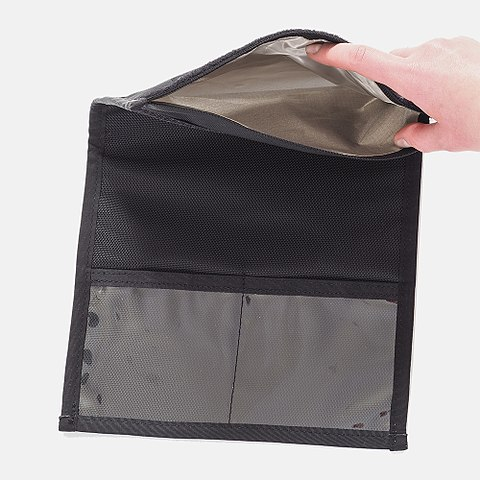
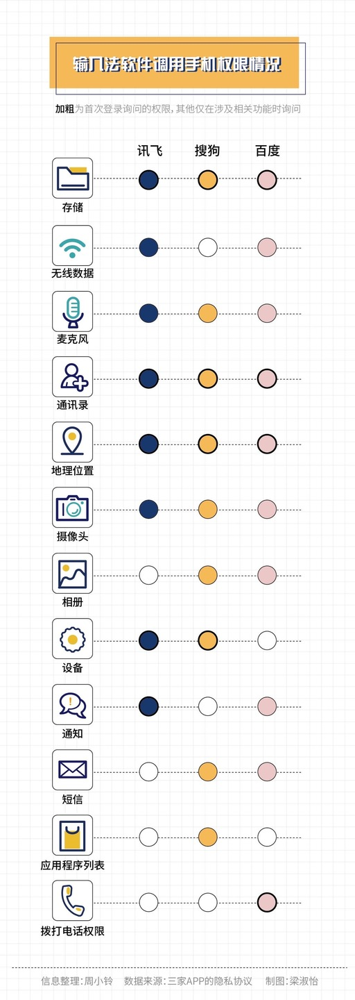

又到了每季度的安全新闻汇总。今天这篇比较长，有些俺认为不那么重要的新闻，就没有放进来了。
《输入法会“背叛”我们吗？ @ 南方周末》
《谁在倒卖我的简历？ @ 新浪》
编程随想注：
今年315晚会曝光的丑闻里面，据说热度最高的是【简历泄露】。简历包含的信息量非常大，也难怪大伙儿很关注此事。
上述这篇挺长的，俺把小标题列一下：
《Facebook 超5亿用户数据泄露，事件与功能误用有关 @ cnBeta》
《巴西几乎所有人的信息泄露 @ Solidot》
《Google、苹果、Facebook、微软——数字时代的军阀 @ Solidot》
俺的观点是：要善于【扬长避短】——既要利用大公司提供的某些优质服务，同时又不让大公司窥探你的隐私。
当然啦，要做到这点，需要一些经验＆技巧。
就拿本人的亲身经历举例——
一方面，俺用着 Google 的博客平台 Blogspot（它的安全性足够好，而且能抵御【国家级】的 DDOS 攻击）。
另一方面，俺不用 Google 搜索（俺用的是 Startpage，其搜索质量等同 Google）；另外，俺也不使用 Google 开发的 Chrome 浏览器。
《QQ 被发现扫描并上传用户的浏览器历史 @ Solidot》
疼逊官方在知乎发了一篇声明（这里），进行辩解。
有必要提醒诸位：不管上述丑闻是“有意 or 无意”，疼逊官方声明肯定都会说是“无意”。因此，对这类官方回应，不必太当真。
《微信好友关系，是否属于个人隐私？ @ Solidot》
《Mark Zuckerberg 被发现使用 Signal @ Solidot》
俺经常说：“观其行”比“听其言”更重要。大伙儿来看看，Facebook 的老板，放着自家的 WhatsApp 不用，非要用别家的 Signal。WhatsApp 的隐私风险，昭然若揭。
《WhatsApp 的隐私友好替代 @ Solidot》
最近几年，不止一个读者在博客评论区问俺，理想中的 IM 工具是啥样？今天借这个机会聊一聊。
俺认为：【至少】要达到如下的【每个】要求，才算及格。
开博十多年，俺【从来不用】IM 工具与读者交流。俺更倾向于用“邮件 or 博客留言”的方式与读者交流。
其一，（相比 IM 而言）这两种方式暴露的信息量更小。
其二，这两种方式都是【纯 Web】，无需安装任何软件（请注意：每当你新装一个软件，都潜在地增加了系统的攻击面）
《为什么俄罗斯网络犯罪分子流行用 Jabber？ @ Solidot》
俄罗斯网络黑帮偏爱的 Jabber/XMPP，严格来讲只是一个【IM 协议】，而不是一款 IM 软件。已经有很多软件（包括开源软件）实现了该协议。
XMPP 采用【联邦式】架构。通俗地讲，其架构类似于“电子邮件”。对于电邮而言，假设张三用 A 公司的邮箱，李四用 B 公司的邮箱。他俩依然可以相互收发邮件，而且两人可以使用完全不同的邮件客户端软件。XMPP 的原理也差不多。
如果你想挑选一款 XMPP 的聊天软件，可以参考俺在上一段点评中列出的“理想的 IM 应具备哪些要素”。
除了 XMPP，还有一个【Matrix 协议】也值得推荐。俺在《近期安全动态和点评（2019年2季度）》简单介绍过它。Matrix 与 XMPP 有诸多相似之处——都是开放的 IM 协议，都采用“联邦式”的架构，都有多种软件实现 ...
《安全公司称：Flash 中国版会安装广告程序 @ Solidot》
《电邮中的跟踪像素日益流行 @ Solidot》
对付这种“跟踪像素”，一种简单有效的方法是——用 Web 方式收邮件，同时在浏览器中【禁用图片】。
有些同学会担心：一旦浏览器禁用图片，访问别的网站也看不到图片了。
俺的解决方法是——设置多个【隔离的】浏览器环境，其中一个【专用于】俺的 Gmail 邮箱。在这个浏览器环境中【禁用图片】。
这么干【至少】有如下几个安全优势：
其一，因为这个浏览器环境是【专用】滴，只访问 Gmail 相关域名，降低了各种“跨站攻击”的风险；
其二，既然只访问固定的域名，可以在该环境中搞【CA 证书白名单】，降低“流氓 CA”的风险（关于【证书白名单】这种安全加固方法，参见“这篇博文”的介绍）；
其三，规避了“跟踪像素”；
其四，因为禁用图片，规避了“浏览器的图片引擎”潜在的安全漏洞。
至于如何设置多个【隔离的】浏览器环境，在如下几个系列教程中都有介绍：
《如何防止黑客入侵》（系列）
《如何保护隐私》（系列）
（本文发出后，与热心读者在评论区交流“邮件访问方式”；俺再补充一个小节，汇总相关的讨论结果）
访问邮箱，常见的方式有两种——
其一，如果电子邮件服务商提供“Web 界面”，那么用户就可以通过【浏览器】访问该界面（在本小节，这称之为“Web 方式”）；
其二，如果电子邮件服务商提供 SMTP/POP3 或诸如此类的协议支持，用户可以通过【邮件客户端软件】操作邮箱（在本小节，这称之为“软件方式”）。
这两种方式各有优缺点，俺简单总结如下：
【Web 方式】的优点
1. 服务器的限制
如果邮件服务器只提供 web 界面（不提供其它邮件协议的支持）；那么你只能用“Web 方式”
2. 避免额外安装软件
一般来说，大部分网民的系统中都已经有浏览器。用“Web 方式”，你就【无需】额外安装邮件客户端软件。
俺经常唠叨的一个安全原则是——系统中安装的软件尽可能少（可以降低【攻击面】）
3. 【网络隐匿性】的考虑
（这点是针对安全性要求较高的网友）
有些邮件用户不希望邮件服务器知道自己的公网 IP，因此需要采用某种“网络隐匿术”。这方面，Tor 当然是首选。
如果用“Web 方式”，要走 Tor 代理会比较容易（直接使用【Tor Browser】即可）
反之，如果用邮件客户端，还需要额外对其进行配置；万一配置错误，导致客户端【没有】走 Tor 网络，会是潜在的隐患。
4. 【本地无痕】的考虑
（这点是针对安全性要求较高的网友）
“Web 方式”【无需】把邮件同步到本地，就有可能做到【本地无痕】。
比如说：先在虚拟机中创建快照，然后用“Web 方式”查看邮件；看完之后回退到快照——这就可以做到【本地无痕】。
【软件方式】的优点
1. 服务器的限制
如果邮件服务器只提供邮件协议（SMTP、POP3、等），不提供“Web 界面”；那么你只能用“软件方式”
2. 攻击面的考虑
随着 Web 的相关标准越来越多，如今的 Web 浏览器也越来越复杂。一般来说，软件越复杂，则攻击面就越大。
相反，如果你选择某款【轻量级】的邮件客户端，它的攻击面就有可能【远小于】浏览器。
3. 【纯文本】的邮件客户端
（这点是针对安全性要求较高的网友）
有些邮件客户端是【纯文本】软件，那么它天生就可以防范（上一个小节所说的）“跟踪像素”。
而且这类邮件客户端还有一个好处——可以用在【纯文本】的操作系统环境中（【没】安装图形界面的系统）。
【纯文本】的操作系统环境，因为少掉了图形界面，有助于降低攻击面；但“使用门槛”会比较高，不适合技术菜鸟。
作为对比，主流的浏览器都依赖“图形界面”。虽然也有少数【纯文本】的浏览器，但这些浏览器的功能太弱（比如：缺乏 JS 引擎），通常【无法】操作邮箱的 Web 界面。
《杭州公司用智能坐垫记录员工离座时间 @ Solidot》
今年春节前（2021年1月底），俺刚刚发了一篇《每周转载：内卷的天朝，各阶层的众生相（网文17篇）》，其中提到了各种“内卷”，包括“白领的内卷”。
在“996”已经成为常态之后，公司的 HR 开始监控员工“离开坐位的时间”。真是越来越变态了。
引申阅读：
《“996工作制”只不过是【劫贫济富】的缩影——“马云奇葩言论”随想》
顺便说一下：在如下博文中，俺介绍了“如何跳出996怪圈”。
《学习与人生——700篇博文之感悟》
《Google shares PoC exploit for critical Windows 10 Graphics RCE bug @ Bleeping Computer》
编程随想注：
该漏洞编号
漏洞位于 DirectWrite API 进行字体渲染的代码中（缓冲区溢出）。Windows 平台上的浏览器（Chrome、Firefox、Edge、IE）都会使用系统提供的 API 进行字体渲染，因此都会受此影响。
为了利用这个漏洞，攻击者可以创建一个 Web 页面，其中包含精心构造的字体，然后诱导受害者访问该页面。当受害者的浏览器打开该页面时，就中招了。由于此漏洞针对“字体渲染”，与 JS【无关】。因此，即使浏览器禁用了 JS 脚本，还是会中招。
在上一期的《近期安全动态和点评（2020年4季度）》中，俺介绍过另一个漏洞
在上一期，俺说过如下这句，今天再次贴出来：
《Multiple Security Updates Affecting TCP/IP: CVE-2021-24074, CVE-2021-24094 and CVE-2021-24086 @ 微软安全响应中心》
编程随想注：
微软在2月的例行安全更新中修复了3个【协议栈】的漏洞。
半个月前（2021年3月），俺正好发了一篇《计算机网络通讯的【系统性】扫盲——从“基本概念”到“OSI 模型”》，介绍了“协议栈”相关的概念。其中有如下这张图：

一般来说，“协议栈”的漏洞是很少见滴，而且也很危险。其危险性在于——攻击者可以发送某个精心构造的数据包，当这个数据包到达目标系统（受害者系统），会立即被操作系统的协议栈处理。如果协议栈有漏洞，系统直接就中招了。假如协议栈的漏洞可用于“远程执行代码”，理论上就可以用来构造快速传播的【蠕虫】。
好在这次的2个远程执行漏洞，利用的难度比较大。但攻击者要想利用这3个漏洞进行“拒绝服务”（让系统蓝屏），还是比较容易滴。以下是微软官网的原话：
《Critical Zoom vulnerability triggers remote code execution without user input @ ZDNet》
编程随想注：
全球疫情之后，Zoom 这款视频聊天工具很流行。前不久的 Pwn2Own 大赛（黑客有奖竞赛）中曝光了 Zoom 的一个高危漏洞，可以实现【远程代码执行】，而且无需用户互动——也就是说，在受害者没做任何动作的情况下，攻击者就可以在系统中运行攻击代码。
目前已经确定：影响 Windows ＆ MacOS 版本的 Zoom Chat。手机版的 Zoom Chat 是否受影响，还不确定。由于该漏洞是前几天（4月7日）才曝光；截止俺写本文时，Zoom 公司尚未修复该漏洞。
《茄子快传发现多个安全漏洞 @ Solidot》
《新 Chrome 0day 漏洞正被利用 @ Solidot》
编程随想注：
普通网民可能对这个漏洞没啥感觉，但对于使用 Exchange 的诸多企业，已经搞得鸡飞狗跳了。
《至少三万家机构由于微软电邮软件（Exchange Server）漏洞被入侵 @ Solidot》
《微软 Exchange 软件出现漏洞，至少遭10个黑客组织利用 @ 路透社》
《10-year-old Sudo bug lets Linux users gain root-level access @ ZDNet》
《Recent Root-Giving Sudo Bug Also Impacts macOS @ Slashdot》
《sudo 漏洞让用户能获得 root 权限 @ Solidot》
这已经是俺第三次谈“sudo 高危漏洞”。
最近两年，sudo 出了好几个高危漏洞。俺在《近期安全动态和点评（2020年1季度）》已经警告过大伙儿。以下是俺当时的原话：
《Linux 内核发现3个提权漏洞，已存在15年之久 @ cnBeta》
详细的技术分析参见“报告漏洞的 GRIMM 博客”。
一般来说，普通用户的 Linux 环境，默认【没】加载 iSCSI 相关的内核模块。此时，如果攻击者要利用这个漏洞，得依赖于【rdma-core】这个软件包，来诱导内核加载 iSCSI 相关模块。也就是说：如果你的 Linux 默认【未】加载 iSCSI 相关的内核模块，也【没】装这个软件包，应该问题不大。
这个案例给大伙儿的教训是——
1. 系统中安装的软件包越少越好——安装的软件包越少，系统的攻击面就越小。
2. 系统中安装的驱动（内核模块）越少越好——驱动越少，系统的攻击面就越小。
3. 善于使用虚拟化软件（虚拟机），有助于达成上述两条（相关教程）
3.1 你可以根据自己的使用场景，装多个虚拟机（比如说：一个用来办公，一个用来娱乐...）；如此一来，每个虚拟机装的软件都比较少。
3.2 虚拟机（Guest OS）看不到真实的硬件，当然就省掉了很多硬件驱动。
3.3 物理系统（Host OS）能看到真实的硬件，驱动会有点多；但如果你把日常操作都放到“虚拟机”，有助于保持物理系统的【极简】。
《Windows Defender 漏洞竟存在12年，近期终于得到修复 @ cnBeta》
结合前一个小节（潜伏十五年的 Linux 内核漏洞），大伙儿可以看出——有些漏洞能潜伏十多年。
《GnuPG 加密库发现严重 bug @ Solidot》
GnuPG 1.x 采用单一的可执行文件，命令行界面和加密功能都放在一起；从 GnuPG 2.x 开始，改用更加模块化的设计，加密相关的功能单独拆分成一个动态库，也就是 Libgcrypt。
这样的设计有一个好处，如果某个第三方软件需要使用 GnuPG 的加密功能，只需要调用 Libgcrypt 这个模块。
俺为啥要说这些捏？
因为，即使你从来不用 GnuPG，但在你的系统中，可能有某些软件会使用 Libgcrypt 这个库。
此漏洞存在 Libgcrypt 的【解密代码】中。因此，攻击者可以精心构造一个 GPG 的加密文件并把攻击代码嵌入其中。然后想办法让目标系统（受害者系统）中的 Libgcrypt 去解密这个文件，解密过程产生缓冲区溢出，有可能触发攻击代码。
《Dnsmasq 漏洞让攻击者能发动 DNS 缓存中毒攻击 @ Solidot》
编程随想注：
1月中旬，川普的各种社交帐号被全面封杀。关于这事儿，列位看官应该都知道，俺就不贴相关的新闻报道链接了。
讨论此事之前，先说一下相关的背景知识：
在谈此问题之前，先要抛开“川普”这个人——因为川普的争议很大（有很多川粉，也有很多川黑）。你不要因为自己对川普的态度，而影响对这个问题的判断。
了解俺的读者，应该比较清楚俺的态度——
《人类自由的三大死敌——谈谈“共产运动、纳粹主义、政教合一”的共性》
《“对抗专制、捍卫自由”的 N 种技术力量》
《每周转载：EFF 创始人约翰·佩里·巴洛和他的【赛博空间独立宣言】》
《香港当局首次引用＜国安法＞封锁网站，引发全面审查担忧 @ BBC/英国广播公司》
如今，香港已经是【一国一制】了。“香港编年史”网站被香港警方封杀，只不过再次印证了这点。
考虑到本博客也有香港读者，提醒一下：
（如果你人在香港）甚至要考虑到更坏的情况——或许有一天，香港网络被纳入【墙内】。
从技术上讲，这一点都不难——只需在香港的国际出口部署 GFW 系统。之所以现在还没这么干，应该是基于其它方面（比如经济/金融）的考虑。
《防火墙屏蔽了多个 DoH 服务器 @ Solidot》
编程随想注：
最近2个月，有不止一位读者在博客留言，反馈说：直接访问 Github，网络传输质量很差（注：如果翻墙访问，就感觉不到）。
俺要提醒一下大伙儿：当年 Gmail 是墙内广泛使用的邮件服务。大约10年前，GFW 开始对 Gmail 的 HTTPS 流量进行【随机丢包】（也就是“人为劣化传输质量”）。在这个阶段，网民还是可以打开 Gmail 的 Web 界面，但会感觉网络很不稳定。
在之后的几年，GFW 对 Gmail 的干扰（随机丢包）越来越严重。一直到了2014年“六四纪念日”的前几天，GFW 彻底阻断了 Gmail 的 HTTPS 流量。
俺猜测：GFW 对付 Github，可能也会是这样。
引申阅读：
《每周转载：关于“Gmail 彻底被墙”的网友评论》
《中国社交平台要求：公众号提供互联网新闻信息，需获资质 @ 新浪》
《中国突袭查禁大量军事自媒体 @ RFI/法广》
《用步枪和钢丝钳断网——缅甸积极建设数字防火墙 @ 纽约时报》
《3月15日起，缅甸全国范围内移动通信网络无限期关闭 @ 搜狐》
《俄罗斯议会考虑：惩罚使用西方卫星宽带的公民 @ Solidot》
《Firefox 将用 Encrypted Client Hello 替换 ESNI @ Solidot》
HTTPS 本质上是“HTTP over TLS/SSL”，其中的 TLS/SSL 协议用于加密。为了支持“多个域名共享同一个 IP 地址”，TLS/SSL 引入了 SNI（Server Name Indication）机制。请注意：这个 SNI 机制本身是【明文】滴。
如果你访问的网站属于“多域名共享 IP”，那么 ISP 就有可能偷窥 SNI，从而知道你访问了哪个域名（但无法知道你访问的网页内容）。同样的道理，天朝的 GFW 也可以通过监视 SNI，以进行针对性的封锁——通过监视 SNI，一旦发现你访问的是【不和谐】的网站，就把 TLS/SSL 连接阻断。
为了解决 SNI 的缺陷，后来 TLS/SSL 协议中引入了 ESNI；但 ESNI 的加密还是不够严谨（如上述文章所说），于是又升级为 ECH（全称是“Encrypted Client Hello ”）。关于这方面的协议细节，俺会在《扫盲 HTTPS 和 SSL/TLS 协议》（系列）的后续博文中介绍。
《Browser 'Favicons' Can Be Used as Undeletable 'Supercookies' To Track You Online @ Slashdot》
编程随想注：
上述这篇洋文介绍了：如何用 favicon 构造 Supercookies。考虑到很多读者看不懂洋文，俺稍微费点口水解释一下：
原理——
所谓的【favicon】就是网站的小图标，也就是显示在浏览器标签页上的那个图标（每个网站都不同）。
浏览器会在本地维护一个 favicon 的缓存（favicon cache）。当你【第一次】访问某网站，缓存中没有该网站的小图标，浏览器会从该网站抓取，并保存在 favicon cache 中；反之，如果 favicon cache 中已经有对应的小图标，则无需抓取。
一般来说，浏览器提供了“清除历史”的功能，可以清除“浏览历史、下载历史、cookie、HTML 缓存、等等”。但【不包括】这个“favicon cache”。也就是说，（在浏览器界面上）【没有】简单的操作可以清除这个缓存。
因此，某些网站（比如在线广告商）就可以利用 favicon cache 的这个特点，构造出某种【持久的指纹】。这个指纹的特色在于——不管你是否开启“隐私模式”、不管你是否清除过历史、不管你是否走代理。这个指纹都是唯一不变滴。
更详细的技术原理，参见“这个链接”。
测试——
你的浏览器是否能对抗 Supercookie 捏？可以通过“这个页面”进行测试。
顺便说一下：这个测试页面在【禁用 JS】的情况下依然可用。也就是说，Supercookie 使用的技术【无需】依赖 JS 脚本。
解决方法——
Firefox 从85版本开始，解决了 Supercookie 带来的隐私风险。具体参见 Mozilla 官网的如下文章。
《Firefox 85 Cracks Down on Supercookies @ Mozilla》
如果你用的是老版本的 Firefox，或者是其它类型的浏览器，还可以考虑用另外一招——【定期删除】“favicon 缓存”。
不同类型的浏览器，“favicon 缓存”的文件位置也不同。对于 Firefox 而言，它位于：实例目录下的
对于使用虚拟机的同学：只要你能确保：当你创建虚拟机快照的时候，浏览器环境是【纯洁】的（所有相关缓存都是【空】的）；那么，当你把虚拟机回退到这个快照，浏览器中的 supercookie 自然就消失了。
另外，
如果你听从了俺多年来的建议，创建【多个浏览器环境】（多实例 or 多用户 or 多虚拟机）。可以在一定程度上缓解“supercookies 的隐私风险”。因为 supercookies【无法】跨浏览器环境；因此，网站也就【无法】判断出：操作多个浏览器环境的，是同一个自然人。
（注：“多浏览器环境”只是“缓解”这个风险，而不是“根治”）
《Google 表示它可能找到了 cookies 的隐私友好替代 @ Solidot》
这个玩意儿到底是不是“隐私友好”？目前俺了解有限，暂时无法从技术角度发表意见。
考虑到 Google 的商业模式（主要利润来自于【在线广告收入】），俺不太相信所谓的“隐私友好”。
《Google 淘汰 Cookies 的计划引来反垄断调查 @ Solidot》
《Firefox 87 trims HTTP Referrers by default to protect user privacy @ Mozilla》
编程随想注：
“HTTP referer”会有隐私风险，尤其当你在使用【搜索引擎】时。如下这篇博文的其中一个章节，扫盲了“HTTP referer”相关的知识。
《Startpage——保护隐私的搜索引擎，搜索质量等同 Google》
《Windows 10 强制性更新将彻底杀死旧 Edge @ Solidot》
《Brave 浏览器支持 IPFS 点对点协议 @ Solidot》
IPFS 是基于 P2P 方式的分布式文件系统。你可以通俗地理解为：IPFS 构建了一个【全球性的网盘】，该网盘上的每个文件都会存储在多个不同的节点。上传到该网盘的每个文件都分配了唯一的“磁力链接”（洋文叫“magnet link”，相当于“网址”）。只要拿到某个文件的“磁力链接”，就可以下载到该文件。下载的时候，你无需关心这个文件存储在哪里。
IPFS 已经诞生了很多年，可惜推广度依然【不够】。主要原因在于——缺乏重量级的软件支持。如果有足够多的浏览器软件支持 IPFS，那它的前途就很光明。如今，Brave 浏览器迈出了第一步。接下来就看 Chrome 与 Firefox 是否跟进了。
俺的网盘分享了《IPFS 白皮书》感兴趣的同学，可以去看看。
《多个 Linux 发行版考虑移除 Chromium 软件包 @ Solidot》
《How law enforcement gets around your smartphone's encryption @ Ars Technica》
关于“手机的危险性”，本博客已经唠叨过无数次了。俺反复告诫大伙儿（尤其是政治敏感人士），【不要】使用手机进行敏感的活动。
上述这篇洋文会告诉你，政府执法机构（警方 or 国安部门）破解手机其实比多数人想象的更容易，不论是 iOS 或 Android，都容易。
俺特意摘出上述三段洋文，其大意是：在【开机且解锁过一次】的状态下，即使手机屏幕已锁定，也很容易破解。关键在于，开机第一次解锁之后，全盘加密的【密钥】就会位于【内存】中。此时，“手机取证软件”只要能利用某种系统漏洞 or 软件漏洞，拿到内存中的“全盘加密密钥”，就 OK 啦。
作为对比，如果是在【关机】状态下，破解的难度就大得多（但依然有可能破解）。
假如你看不懂洋文，可以去看系列教程《TrueCrypt 使用经验》的第3篇——专门谈“加密盘的破解与防范”，其中有介绍【盗取密钥】这招的原理。
《Google 从 Android 设备上收集的遥测数据二十倍于苹果 @ Solidot》
《安全公司发现完整间谍软件功能的 Android 恶意程序 @ Solidot》
分享这篇报道，是想让诸位见识一下手机木马（尤其是功能完善的手机木马）能做到何种程度。
编程随想注：
这类攻击主要针对【企业】，而且与软件开发相关。不懂编程的读者，可直接跳过本小节。
《揭秘新的供应链攻击，一研究员靠它成功入侵微软、苹果等35家科技公司 @ InfoQ》
《最近披露的“依赖混淆供应链攻击”开始大量增加 @ Solidot》
《Google 警告针对安全研究员的攻击行动 @ Solidot》
“安全公司的研究人员”本身是高价值目标，因为他们手头有可能掌握了一些“未公开漏洞”。这类漏洞的价值很高（比“零日漏洞”更值钱），俗称“数字化军火”。
有很多安全研究人员擅长“攻击”，但却【不】擅长“防御”。因此，他们会成为其它攻击者的目标（有点像“黑吃黑”）。
《针对手游玩家的供应链攻击 @ Solidot》
《美国传唤多家中国电信企业，开始撤销两家中企在美经营权 @ RFI/法广》
《美国拜登政府修订供货华为许可证，对可用于 5G 设备的产品实施新限制 @ 路透社》
《比特朗普还要狠，拜登对华为 5G 禁令加码，新的限制条件更严格 @ 网易》
《美国将飞腾/申威等七家中国超算实体列入黑名单，称其协助中国军方 @ 路透社》
《The Long Hack——How China Exploited a U.S. Tech Supplier @ Bloomberg》
编程随想注：
早在2018年，彭博社已经报道过类似案例——天朝利用代工的机会，在超微公司（Supermicro）的服务器 BIOS 中植入恶意代码，从而进行供应链攻击。
2018年的那篇报道引发了很多争议。今年2月份的这篇报道，是对2018年那篇的补充。全文很长，下面这篇 RFI 的中文报道是其简述。
《彭博社：中国通过科技供应商收集情报，成为全球供应链的广泛风险 @ RFI/法广》
编程随想注：
在上一期的《近期安全动态和点评（2020年4季度）》，详细介绍了去年（2020）曝光的“SolarWinds 攻击事件”——号称【史上最严重的供应链攻击】。
当时俺分析了：至少有【两波】攻击者。第1波攻击者，俄国佬的嫌疑最大；那么，第2波攻击者会是谁捏？以下是今年1季度的后续报道。目前看来，第2波攻击者很大可能是天朝的御用骇客。
《疑似中国黑客利用 SolarWinds 软件漏洞入侵美国政府 @ Solidot》
《研究称：中国黑客也对 SolarWinds 客户发动了攻击 @ Solidot》
《微软总裁布拉德·史密斯称：SolarWinds 黑客事件是有史以来最大、最复杂的 @ cnBeta》
《NASA and the FAA were also breached by the SolarWinds hackers @ Bleeping Computer》
《Hacker Increased Chemical Level At Florida City's Water Supply, Police Say @ Slashdot》
《佛罗里达州水处理系统遭黑客攻击，万幸没有居民受到伤害 @ cnBeta》
在《近期安全动态和点评（2019年3季度）》中已经提到：【供电系统 ＆ 供水系统】将会成为网络战的目标。如今应验了。
《Best Secure Linux Distros for Enhanced Privacy ＆ Security @ Linux Security》
编程随想注：
这篇洋文推荐了六款强化安全和隐私的 Linux 发行版。对于 Linux 用户而言，不同的人有不同的技能水平、使用场景、操作习惯。很难给出某种普适的排名。因此，上述这篇文章也仅仅是作为某种参考。
全文很长，俺只摘录一部分（如下）
《Ars 尝试华为的鸿蒙操作系统 @ Solidot》
“鸿蒙系统”被调侃为【连哄带蒙】，果然名不虚传 :)
不过这篇报道已经不新鲜了。去年9月底，俺发了如下这篇博文，作为“国庆献礼”。在这个排行榜上就有“鸿蒙系统”。
《二十年目睹之怪现状——中国学术界、科技界的“奇葩排行榜”》
《华为高管声称：鸿蒙 V3 将不再基于 Android @ Solidot》
华为高管的辩解，属于“偷换概念”（稻草人谬误）。
之前网民指责“鸿蒙是安卓换皮”，因为鸿蒙大量使用了 AOSP（Android Open Source Project）的代码。在【源代码】层面，“鸿蒙系统”与“安卓系统”实在太相似了。
华为高管的忽悠在于——先把命题“鸿蒙使用安卓（AOSP）的代码”偷偷替换为“鸿蒙使用谷歌（Google）的代码”。然后再针对后一个命题进行反驳。这就是典型的【稻草人谬误】。
华为高管采用这种诡辨式的逻辑把戏，反而让人觉得：他们心虚。
《不请自来的物联网时代 @ Solidot》
上述文章中提到的【法拉第笼】，洋文叫做“Faraday cage”。是用导体（通常是金属）做成的笼子或网袋。它利用物理学的【静电屏蔽原理】，使得电子设备无法与外界通讯。

（用柔性金属面料制成的法拉第笼）
顺便说一下：
专业的警方取证人员，都会随身携带这个玩意儿。当他们收缴了你的手机，直接丢入“法拉第笼”——使得你再也无法远程操控手机（自然也就无法“远程刷机”）。
有些同学可能会问：如果要防止手机的主人远程操控，为啥警方在收缴了手机之后，不使用“关机 or 拔电池”这2招捏？
俺的回答是：
每个想问此问题的读者，都属于“看博文太粗心”。在前面“移动设备”的那个章节中，俺已经解释了：手机在【开机】的状态下，更容易破解。
《First Fully Weaponized Spectre Exploit Discovered Online @ Slashdot》
编程随想注：
关于 Meltdown ＆ Spectre 漏洞，去年和前年的《近期安全动态和点评》都有聊过。
在今年（2021）之前，对这俩漏洞还停留在“理论”阶段；到了今年2月份，在线查毒引擎 VirusTotal 首次发现与这两个漏洞相关的攻击代码，分别针对 Windows ＆ Linux。这也就意味着：对这两个漏洞的研究，已经从“理论”上升到“实践”。
这两个漏洞源于 CPU 硬件的设计缺陷，很难根治；而且受影响的 CPU 很多，波及面从 x86 系列到 ARM 系列。
俺在《近期安全动态和点评（2019年1季度）》提到如下这段话：
《A Spectre proof-of-concept for a Spectre-proof web @ Google 安全博客》
《Google 演示 Spectre 概念验证攻击 @ Solidot》
《英特尔新侧信道攻击——Lord of the Ring(s) @ Solidot》
《安装家庭监控探头的技工承认，偷窥客户做爱 @ Solidot》
编程随想注：
在上一期的《近期安全动态和点评（2020年4季度）》，俺还在吐槽：云计算三大巨头中，只有 Google 对 Rust 的热情不高。
没想到才过了一个季度，Google 的态度就有了明显变化。具体请看如下几篇报道。
《Google 宣布它正致力于用 Rust 重实现关键安全软件 @ Solidot》
《Rust in the Android platform @ Google 安全博客》
《Android 加入了对 Rust 语言的支持 @ Solidot》
《Google 资助用 Rust 语言，为 Apache HTTP 开发安全模块 mod_tls @ Solidot》
《对 Rust 的初步支持登录 Linux-Next @ 开源中国》
俺博客上，和本文相关的帖子（需翻墙）：
《计算机网络通讯的【系统性】扫盲——从“基本概念”到“OSI 模型”》
《如何防止黑客入侵》（系列）
《如何保护隐私》（系列）
《扫盲操作系统虚拟机》（系列）
《TrueCrypt 使用经验》（系列）
《Startpage——保护隐私的搜索引擎，搜索质量等同 Google》
《扫盲 Firefox 定制——从“user.js”到“omni.ja”》
《扫盲 HTTPS 和 SSL/TLS 协议》（系列）
《“对抗专制、捍卫自由”的 N 种技术力量》
《近期安全动态和点评（2020年4季度）》
《近期安全动态和点评（2020年1季度）》
《近期安全动态和点评（2019年3季度）》
《近期安全动态和点评（2019年2季度）》
★隐私保护
◇【输入法】的隐私风险
《输入法会“背叛”我们吗？ @ 南方周末》
一位受访者对南方周末记者描述，几天前朋友家要换马桶，她微信回信息说了自家用的牌子，下次打开手机 WPS 时，开屏广告就成了京东马桶。“这种 N 年不提的话题，不可能这么巧吧？”她怀疑是输入法泄密。
根据 Mob 研究院数据，2020年搜狗、讯飞和百度三家输入法占据了国内市场九成的活跃用户，其中搜狗占有率最高，54%。2020年9月，腾讯全资收购了搜狗。
易观一组数据表明，中国第三方输入法的活跃用户在2019年达到7.71亿。输入法已成网民刚需。
输入法会获取哪些信息
......
梳理三份隐私政策，输入法软件可能收集的用户信息有11类，涉及调用的手机权限有12项。

◇大规模用户数据泄漏
《谁在倒卖我的简历？ @ 新浪》
编程随想注：
今年315晚会曝光的丑闻里面，据说热度最高的是【简历泄露】。简历包含的信息量非常大，也难怪大伙儿很关注此事。
上述这篇挺长的，俺把小标题列一下：
你的简历是怎么泄露出去的？
1）注册假公司骗取简历
2）与招聘网站“内外勾结”
3）利用爬虫技术抓取（招聘网站的）简历
买你的简历用来干嘛？
1）网赚营销与兼职招聘
2）博彩、彩票和棋牌骗局
3）房地产、保险、教育培训的营销
《Facebook 超5亿用户数据泄露，事件与功能误用有关 @ cnBeta》
北京时间4月7日早间消息，据报道，此前，美国社交媒体平台 Facebook 被曝有5.33亿用户数据遭泄露，其中包含一些知名人士的信息。媒体报道称，泄露的信息包括用户手机号码、名字、位置、出生年月日、电子邮件地址等。对此，Facebook 今日回应称，报道中的数据泄露事件与数据窃取有关，而不是被黑客入侵系统。
Facebook 表示，2019年因为一个功能遭到误用，导致信息出现泄露，可能影响用户约5.3亿；发现问题之后，Facebook 第一时间堵住漏洞。
根据 Facebook 的解释，2019年9月之前，恶意破坏者利用 Facebook 同步联系人工具存在的漏洞窃取数据。随后公司发现漏洞并修复。
......
《巴西几乎所有人的信息泄露 @ Solidot》
巴西几乎所有人的信息泄露。泄露的数据为 14GB，包含了1.04亿车辆和4000万家企业详细信息，潜在受影响人数2.2亿。巴西人口2.1亿，这意味着巴西所有人的信息都被泄露（还有部分在巴西生活的外籍居民）。泄露的信息包含了姓名、出生日期和 CPF 号码。CPF 号码是巴西税务局分配给居民和需要纳税的外籍居民的数字。网络安全公司对钓鱼骗局发出了警告。
◇信息时代的【数字军阀】
《Google、苹果、Facebook、微软——数字时代的军阀 @ Solidot》
去年11月，苹果用户在一次影响广泛的宕机事故后才知道：苹果监视了用户打开和启动的每一个应用程序（编程随想注：上一期谈过这个重大丑闻【OCSP 事件】）编程随想注：
苹果为什么要这么做？最为善意的猜测是：此举旨在更早发现恶意程序。在一个充斥着恶意的网络世界里，这么做是必要的。安全专家 Bruce Schneier 将这种现象形容为“封建式安全”。
生活在21世纪的我们，面临各种数字强盗的围攻。从身份窃贼，到跟踪者，到企业和政府间谍，到骚扰者。我们是没有办法自保的。即使是身经百战的专家也无法和强盗相抗衡。为了抵抗强盗，你必须做到完美，不犯任何错误。而强盗只要抓住一个错误就能逮住你。因此为了安全起见，你必须和数字军阀结盟。苹果、Google、Facebook 和微软等建立了庞大的要塞，它们投入了大量金钱招募了最强的雇佣兵来保护要塞，为客户（包括你）抵御攻击者。
但如果军阀们转向了你，你对它们而言将是赤裸裸的。这种敌我难辨的情况在与军阀打交道的过程中一直发生着。比如 Google 调整 Chrome 以阻止商业监视（但不阻止它自己的商业监视）。Google 会努力阻止其他人监视你，但如果他们付钱了，Google 就会允许他们监视你。
如果你不在乎被 Google 监视，如果你信任由 Google 判断谁是骗子谁不是，那么这没问题。但如果你们之间存在不一致的意见，那么输的肯定是你。苹果在2017年按中国要求从其应用商店下架了保护隐私的工具。原因是苹果必须遵守中国的法律，它在中国有公司，有制造基地。军阀自身的安全是远甚于客户的。
俺的观点是：要善于【扬长避短】——既要利用大公司提供的某些优质服务，同时又不让大公司窥探你的隐私。
当然啦，要做到这点，需要一些经验＆技巧。
就拿本人的亲身经历举例——
一方面，俺用着 Google 的博客平台 Blogspot（它的安全性足够好，而且能抵御【国家级】的 DDOS 攻击）。
另一方面，俺不用 Google 搜索（俺用的是 Startpage，其搜索质量等同 Google）；另外，俺也不使用 Google 开发的 Chrome 浏览器。
◇QQ 在偷窥你的上网历史
《QQ 被发现扫描并上传用户的浏览器历史 @ Solidot》
腾讯消息应用 QQ 以及 QQ 办公版 TIM 被发现会扫描用户的浏览器历史，搜索购物记录，选择性上传。用户报告，QQ 在登陆10分钟之后开始扫描 Appdata\Local\ 下的所有文件夹，对其中 User Data\Default\History 进行进一步的扫描，User Data\Default\History 是基于 Chrome/Chromium 的浏览器默认历史纪录存放位置，Firefox 的浏览历史存放位置不同，因此目前看来不受影响。不过 Firefox 市场份额不高，而基于 Chrome/Chromium 的浏览器占据了九成以上的份额。编程随想注：
疼逊官方在知乎发了一篇声明（这里），进行辩解。
有必要提醒诸位：不管上述丑闻是“有意 or 无意”，疼逊官方声明肯定都会说是“无意”。因此，对这类官方回应，不必太当真。
◇疼逊如何看待“微信好友关系”？
《微信好友关系，是否属于个人隐私？ @ Solidot》
腾讯总部所在地深圳市南山区法院上个月判决，微信好友关系不属于个人隐私。
本案的原告在2019年发现，使用微信或 QQ 登录腾讯“微视”APP后，微视会获取其全部微信或 QQ 好友信息。他认为，腾讯公司未经其授权将他的微信、QQ 好友关系提供给其他 APP，侵犯了他的隐私权。
但南山法院认为：“隐私是指用户对其生活领域不愿公开的信息享有不被他人知悉的权利。原告主张的性别和地区属于公开信息，不构成隐私。”
北京师范大学法学院教授袁治杰认为：腾讯并没有权利将微信好友关系披露给第三人，“即使我同意微信可以将我的好友关系提供给他人，微信也不得提供。因为好友关系是双向的，要想有权提供，微信必须同时获得了我的好友们的同意才行。换句话说，必须获得双向同意才行。”
◇【聊天工具/IM】的选型
《Mark Zuckerberg 被发现使用 Signal @ Solidot》
Facebook CEO Mark Zuckerberg 使用加密消息应用 Signal，他的电话号码包含在泄露的5.33亿 Facebook 用户数据中间（编程随想注：这个“用户数据泄漏事件”，前面已经提到了），除此之外还有他的名字、地址、婚姻状况、出生日期和 Facebook ID。编程随想注：
一位安全研究人员说：又一次大转折，Mark Zuckerberg 注重他自己的隐私，使用不属于 @facebook 的端对端加密聊天应用。
......
俺经常说：“观其行”比“听其言”更重要。大伙儿来看看，Facebook 的老板，放着自家的 WhatsApp 不用，非要用别家的 Signal。WhatsApp 的隐私风险，昭然若揭。
《WhatsApp 的隐私友好替代 @ Solidot》
WhatsApp 的服务条款变更引发了很多争议，加密邮件服务 Proton 官方博客介绍了多个隐私友好的替代服务：编程随想注：
Signal，开源端对端加密，缺点是注册需要手机号；
Telegram 的缺点是私聊才端对端加密，没有群聊；（编程随想注：这款也要用手机号注册）
Threema，开源端对端加密，但应用本身不免费；
Wickr Me，不开源；
Wire，注册需要手机号或电邮，记录大量元数据；
Element，使用 Matrix 通信协议，基于去中心化联邦架构；
Keybase，已被 Zoom 收购，记录元数据。（编程随想注：Zoom 是商业公司）
最近几年，不止一个读者在博客评论区问俺，理想中的 IM 工具是啥样？今天借这个机会聊一聊。
俺认为：【至少】要达到如下的【每个】要求，才算及格。
- 开源（不光客户端要开源；如果有服务端，服务端也要开源）
- 依靠【社区 or 非营利组织】进行维护（俺信不过商业公司）
- 能够以【隐匿】的方式注册帐号（这也就意味着：凡是要“绑定手机号”的，都不符合）
- 能运行在【桌面】操作系统（“桌面系统”比“手机系统”更有利于安全加固——关于这点，俺已经唠叨很多次了）
- 采用【去中心化】的架构（“P2P or 联邦式”都可以，有助于对抗政府的审查和封锁）
- 免费（一旦涉及到付费，容易暴露个人身份信息）
- 支持“端到端加密”（这点无需解释）
开博十多年，俺【从来不用】IM 工具与读者交流。俺更倾向于用“邮件 or 博客留言”的方式与读者交流。
其一，（相比 IM 而言）这两种方式暴露的信息量更小。
其二，这两种方式都是【纯 Web】，无需安装任何软件（请注意：每当你新装一个软件，都潜在地增加了系统的攻击面）
《为什么俄罗斯网络犯罪分子流行用 Jabber？ @ Solidot》
俄罗斯网络犯罪世界充斥着谜团，但有一种技术充当了主要的通信工具：有18年历史的分布式开源即时通讯协议 Jabber。根据安全公司 Flashpoint 的研究，黑客做交易、分享情报和对恶意程序提供技术支持都是通过 Jabber 完成。该公司资深研究员 Leroy Terrelonge III 称，在网络犯罪经济中，Jabber 是通信的黄金标准。Jabber（或又叫 XMPP）通信系统由数千个独立服务器构成，在全世界有大约一千万用户。有10亿用户的 WhatsApp 使用的是一个 XMPP 变体。ICQ 曾经统治了俄罗斯 IM 市场长达20年，当 Edward Snowden 在2013年披露美国的大规模监视之后，俄罗斯人开始转向了 Jabber。Jabber 加上它的加密插件 OTR（off-the-record）能为通信提供强加密支持。Jabber 的联邦式架构允许任何人运营服务器，这对犯罪分子有巨大的吸引力，他们担心企业与政府之间合作过于紧密。编程随想注：
俄罗斯网络黑帮偏爱的 Jabber/XMPP，严格来讲只是一个【IM 协议】，而不是一款 IM 软件。已经有很多软件（包括开源软件）实现了该协议。
XMPP 采用【联邦式】架构。通俗地讲，其架构类似于“电子邮件”。对于电邮而言，假设张三用 A 公司的邮箱，李四用 B 公司的邮箱。他俩依然可以相互收发邮件，而且两人可以使用完全不同的邮件客户端软件。XMPP 的原理也差不多。
如果你想挑选一款 XMPP 的聊天软件，可以参考俺在上一段点评中列出的“理想的 IM 应具备哪些要素”。
除了 XMPP，还有一个【Matrix 协议】也值得推荐。俺在《近期安全动态和点评（2019年2季度）》简单介绍过它。Matrix 与 XMPP 有诸多相似之处——都是开放的 IM 协议，都采用“联邦式”的架构，都有多种软件实现 ...
◇【中国版】的 Flash 插件
《安全公司称：Flash 中国版会安装广告程序 @ Solidot》
Adobe 在2020年12月31日之后停止更新和分发 Flash Player，之后重庆重橙网络科技有限公司通过网站 flash.cn 独家在中国大陆分发和维护 Flash Player。
安全公司 Minerva Labs 在收到多次与 Flash 中国版相关的安全警告之后对其进行了分析，发现 Flash 中国版除了安装 Flash 之外还会下载和运行名叫 nt.dll 的文件，其主要功能类似广告程序，但不排除它可以用于其它恶意目的。Flash 中国版主要影响中国用户。
◇Email 里面的【跟踪像素】
《电邮中的跟踪像素日益流行 @ Solidot》
在电邮中使用跟踪技术正日益常见。被称为“跟踪像素”的技术可记录邮件是否打开，以及何时打开；邮件被打开了多少次；打开邮件的设备类型；用户的粗略位置。这项技术可被用于判断一个特定电邮推广活动的影响，以及记录下更多的客户肖像细节。编程随想注：
跟踪像素通常是只有 1x1 像素的 .GIF 或 .PNG 文件，被插入到插入到电邮的页眉、页脚或正文中，用户的裸眼是无法识别出它的。用户可以使用电邮程序的免费插件剥离掉大部分跟踪像素。
对付这种“跟踪像素”，一种简单有效的方法是——用 Web 方式收邮件，同时在浏览器中【禁用图片】。
有些同学会担心：一旦浏览器禁用图片，访问别的网站也看不到图片了。
俺的解决方法是——设置多个【隔离的】浏览器环境，其中一个【专用于】俺的 Gmail 邮箱。在这个浏览器环境中【禁用图片】。
这么干【至少】有如下几个安全优势：
其一，因为这个浏览器环境是【专用】滴，只访问 Gmail 相关域名，降低了各种“跨站攻击”的风险；
其二，既然只访问固定的域名，可以在该环境中搞【CA 证书白名单】，降低“流氓 CA”的风险（关于【证书白名单】这种安全加固方法，参见“这篇博文”的介绍）；
其三，规避了“跟踪像素”；
其四，因为禁用图片，规避了“浏览器的图片引擎”潜在的安全漏洞。
至于如何设置多个【隔离的】浏览器环境，在如下几个系列教程中都有介绍：
《如何防止黑客入侵》（系列）
《如何保护隐私》（系列）
◇访问邮箱的方式——“Web 方式” VS “软件方式”
（本文发出后，与热心读者在评论区交流“邮件访问方式”；俺再补充一个小节，汇总相关的讨论结果）
访问邮箱，常见的方式有两种——
其一，如果电子邮件服务商提供“Web 界面”，那么用户就可以通过【浏览器】访问该界面（在本小节，这称之为“Web 方式”）；
其二，如果电子邮件服务商提供 SMTP/POP3 或诸如此类的协议支持，用户可以通过【邮件客户端软件】操作邮箱（在本小节，这称之为“软件方式”）。
这两种方式各有优缺点，俺简单总结如下：
【Web 方式】的优点
1. 服务器的限制
如果邮件服务器只提供 web 界面（不提供其它邮件协议的支持）；那么你只能用“Web 方式”
2. 避免额外安装软件
一般来说，大部分网民的系统中都已经有浏览器。用“Web 方式”，你就【无需】额外安装邮件客户端软件。
俺经常唠叨的一个安全原则是——系统中安装的软件尽可能少（可以降低【攻击面】）
3. 【网络隐匿性】的考虑
（这点是针对安全性要求较高的网友）
有些邮件用户不希望邮件服务器知道自己的公网 IP，因此需要采用某种“网络隐匿术”。这方面，Tor 当然是首选。
如果用“Web 方式”，要走 Tor 代理会比较容易（直接使用【Tor Browser】即可）
反之，如果用邮件客户端，还需要额外对其进行配置；万一配置错误，导致客户端【没有】走 Tor 网络，会是潜在的隐患。
4. 【本地无痕】的考虑
（这点是针对安全性要求较高的网友）
“Web 方式”【无需】把邮件同步到本地，就有可能做到【本地无痕】。
比如说：先在虚拟机中创建快照，然后用“Web 方式”查看邮件；看完之后回退到快照——这就可以做到【本地无痕】。
【软件方式】的优点
1. 服务器的限制
如果邮件服务器只提供邮件协议（SMTP、POP3、等），不提供“Web 界面”；那么你只能用“软件方式”
2. 攻击面的考虑
随着 Web 的相关标准越来越多，如今的 Web 浏览器也越来越复杂。一般来说，软件越复杂，则攻击面就越大。
相反，如果你选择某款【轻量级】的邮件客户端，它的攻击面就有可能【远小于】浏览器。
3. 【纯文本】的邮件客户端
（这点是针对安全性要求较高的网友）
有些邮件客户端是【纯文本】软件，那么它天生就可以防范（上一个小节所说的）“跟踪像素”。
而且这类邮件客户端还有一个好处——可以用在【纯文本】的操作系统环境中（【没】安装图形界面的系统）。
【纯文本】的操作系统环境，因为少掉了图形界面，有助于降低攻击面；但“使用门槛”会比较高，不适合技术菜鸟。
作为对比，主流的浏览器都依赖“图形界面”。虽然也有少数【纯文本】的浏览器，但这些浏览器的功能太弱（比如：缺乏 JS 引擎），通常【无法】操作邮箱的 Web 界面。
◇【智能坐垫】的隐私问题
《杭州公司用智能坐垫记录员工离座时间 @ Solidot》
杭州荷博物联公司设计了一款智能坐垫，作为产品研发的一部分，发给员工放在他们的办公椅上进行测试。这些坐垫号称是用于检测员工健康状况，指出可能是疲劳迹象的不良坐姿，测量心率，统计员工在办工桌前坐了多久。编程随想注：
但当该公司的人力资源经理开始询问员工，为什么长时间离开座椅或提前下班时，人们很快明白了，这些坐垫也记录了员工最不想让老板知道的事情：他们什么时候不在自己的办公桌前，这可能会给员工带来麻烦。
......
今年春节前（2021年1月底），俺刚刚发了一篇《每周转载：内卷的天朝，各阶层的众生相（网文17篇）》，其中提到了各种“内卷”，包括“白领的内卷”。
在“996”已经成为常态之后，公司的 HR 开始监控员工“离开坐位的时间”。真是越来越变态了。
引申阅读：
《“996工作制”只不过是【劫贫济富】的缩影——“马云奇葩言论”随想》
顺便说一下：在如下博文中，俺介绍了“如何跳出996怪圈”。
《学习与人生——700篇博文之感悟》
★高危漏洞
◇Windows 的远程执行漏洞
《Google shares PoC exploit for critical Windows 10 Graphics RCE bug @ Bleeping Computer》
编程随想注：
该漏洞编号
CVE-2021-24093，影响 Windows 10 ＆ Windows Server 2016。这是 Google 安全研究人员在去年11月发现并报告给微软。而微软直到今年（2021）2月的例行更新才修复。漏洞位于 DirectWrite API 进行字体渲染的代码中（缓冲区溢出）。Windows 平台上的浏览器（Chrome、Firefox、Edge、IE）都会使用系统提供的 API 进行字体渲染，因此都会受此影响。
为了利用这个漏洞，攻击者可以创建一个 Web 页面，其中包含精心构造的字体，然后诱导受害者访问该页面。当受害者的浏览器打开该页面时，就中招了。由于此漏洞针对“字体渲染”，与 JS【无关】。因此，即使浏览器禁用了 JS 脚本，还是会中招。
在上一期的《近期安全动态和点评（2020年4季度）》中，俺介绍过另一个漏洞
CVE-2020-15999，与这个很类似。CVE-2020-15999 位于“FreeType 字体渲染库”。也是利用“Web 页面的字体”来实现远程代码执行。在上一期，俺说过如下这句，今天再次贴出来：
假如你很注重安全性，为了更彻底地消除【字体】导致的攻击面，你可以定制浏览器，禁止在 Web 页面中加载外来的字体。
对 Firefox 的深度定制，可以参考教程《扫盲 Firefox 定制——从“user.js”到“omni.ja”》；对其它浏览器的深度定制，俺暂时还没写过教程。
《Multiple Security Updates Affecting TCP/IP: CVE-2021-24074, CVE-2021-24094 and CVE-2021-24086 @ 微软安全响应中心》
编程随想注：
微软在2月的例行安全更新中修复了3个【协议栈】的漏洞。
半个月前（2021年3月），俺正好发了一篇《计算机网络通讯的【系统性】扫盲——从“基本概念”到“OSI 模型”》，介绍了“协议栈”相关的概念。其中有如下这张图：
一般来说，“协议栈”的漏洞是很少见滴，而且也很危险。其危险性在于——攻击者可以发送某个精心构造的数据包，当这个数据包到达目标系统（受害者系统），会立即被操作系统的协议栈处理。如果协议栈有漏洞，系统直接就中招了。假如协议栈的漏洞可用于“远程执行代码”，理论上就可以用来构造快速传播的【蠕虫】。
好在这次的2个远程执行漏洞，利用的难度比较大。但攻击者要想利用这3个漏洞进行“拒绝服务”（让系统蓝屏），还是比较容易滴。以下是微软官网的原话：
The two RCE（注：Remote Code Execution）vulnerabilities are complex which make it difficult to create functional exploits, so they are not likely in the short term. We believe attackers will be able to create DoS exploits much more quickly and expect all three issues might be exploited with a DoS attack shortly after release.
◇Zoom（视频聊天）的远程执行漏洞
《Critical Zoom vulnerability triggers remote code execution without user input @ ZDNet》
编程随想注：
全球疫情之后，Zoom 这款视频聊天工具很流行。前不久的 Pwn2Own 大赛（黑客有奖竞赛）中曝光了 Zoom 的一个高危漏洞，可以实现【远程代码执行】，而且无需用户互动——也就是说，在受害者没做任何动作的情况下，攻击者就可以在系统中运行攻击代码。
目前已经确定：影响 Windows ＆ MacOS 版本的 Zoom Chat。手机版的 Zoom Chat 是否受影响，还不确定。由于该漏洞是前几天（4月7日）才曝光；截止俺写本文时，Zoom 公司尚未修复该漏洞。
◇“茄子快传”的远程执行漏洞
《茄子快传发现多个安全漏洞 @ Solidot》
安全公司趋势科技报告：在茄子快传中发现多个安全漏洞，漏洞能导致远程代码执行。
茄子快传是下载量最高的传输应用，曾跻身全球应用下载排行榜前十。它最早由联想开发，一度预装在联想手机上，后从联想独立出去。
茄子快传索取的权限相当广，其中包括访问所有本地存储和媒体，摄像头、麦克风、通讯录、位置，甚至还可以删除应用。趋势科技称，茄子快传的漏洞能被用于泄露用户的敏感数据，以及远程执行代码。
◇Chrome 的高危漏洞
《新 Chrome 0day 漏洞正被利用 @ Solidot》
Google 本周释出了 Chrome 的安全更新 v89.0.4389.72，修复了47个漏洞，其中包括正被利用 0day 漏洞。
编号为 CVE-2021-21166 的漏洞是微软安全研究员 Alison Huffman 在2月11日报告的，Google 没有披露漏洞细节，只是表示它知道漏洞正被利用。
这是 Google 在今年修复的第二个 0day，上一个是2月4日修复的 V8 堆溢出漏洞 CVE-2021-21148。
◇Exchange Server 高危漏洞
编程随想注：
普通网民可能对这个漏洞没啥感觉，但对于使用 Exchange 的诸多企业，已经搞得鸡飞狗跳了。
《至少三万家机构由于微软电邮软件（Exchange Server）漏洞被入侵 @ Solidot》
KrebsOnSecurity 援引消息来源报道，至少三万家美国机构——包括大量的小企业和各级政府被黑客组织利用微软电邮软件 Microsoft Exchange Server 的漏洞入侵。
微软本周披露，黑客正在利用 Exchange Server v2013 到 v2019 中的四个 0day 漏洞。在漏洞披露的三天内，安全专家称：同一黑客组织增加了对尚未修补的 Exchange 服务器的攻击，在入侵之后攻击者留下一个可以后续访问的 web shell。微软表示正与美国网络安全和基础设施安全局密切合作，为客户提供最佳的指南和缓解措施。
《微软 Exchange 软件出现漏洞，至少遭10个黑客组织利用 @ 路透社》
路透华盛顿3月10日 - 网路安全公司 ESET 周三在博客贴文中表示，至少有10个不同的黑客组织正利用近期发现的微软邮件服务器软件漏洞来入侵全球各地目标。
漏洞遭到利用的广泛程度，使得美国与欧洲监管者就微软 Exchange 软件漏洞发出的警告更形迫切。
微软这套用户众多的电邮与日程软件的安全漏洞，等于为商业级的网络间谍活动开启大门，使得不怀好意者能够从易于入侵的服务器中任意窃取电邮。路透上周报导，已有数万个公司遭到波及，每天都有新的受害者出现。
虽然微软发布修补措施，但许多客户更新速度缓慢，意味着这方面至少还有部分对各类黑客而言是门户洞开的。专家将更新缓慢部分归因于 Exchange 架构的复杂性。
微软对客户更新速度缓慢不予置评。在先前有关此漏洞的声明中，微软已强调立即修补所有受影响系统的重要性。
◇sudo 的本地提权漏洞
《10-year-old Sudo bug lets Linux users gain root-level access @ ZDNet》
《Recent Root-Giving Sudo Bug Also Impacts macOS @ Slashdot》
《sudo 漏洞让用户能获得 root 权限 @ Solidot》
安全审计公司 Qualys 发现了一个有10年历史的 Sudo 严重漏洞，允许 Linux 用户获得 root 级别的权限。编程随想注：
该漏洞被称为 Baron Samedit，编号 CVE-2021-3156，Sudo 团队已经释出了补丁。该漏洞允许已经获得低权限账号的攻击者获得 root 权限，即使账号没有列入控制账号访问的配置文件 /etc/sudoers 中。
这已经是俺第三次谈“sudo 高危漏洞”。
最近两年，sudo 出了好几个高危漏洞。俺在《近期安全动态和点评（2020年1季度）》已经警告过大伙儿。以下是俺当时的原话：
3个月前（2020年1月）的那篇《近期安全动态和点评》，俺已经聊过 sudo 的另一个高危漏洞。
在不到半年时间内，sudo 连续爆了两个非常致命的漏洞——对攻击者而言，这2个漏洞很容易利用，而且都能实现【提权】。
这样的苗头挺危险，很可能预示着——sudo 这个软件包内部还有其它一些高危漏洞没被发现。
有鉴于此，你或许要考虑：【不装或卸载】这个软件包。在需要切换用户权限时，改用 su 命令。当然啦，sudo 命令在很多场合比 su 命令更方便。因此，你需要作出一些取舍。
◇Linux 内核本地提权漏洞
《Linux 内核发现3个提权漏洞，已存在15年之久 @ cnBeta》
......编程随想注：
这些漏洞（CVE-2021-27363、CVE-2021-27364 和 CVE-2021-27365）存在于内核的 iSCSI 模块中。虽然在默认情况下该模块是没有被加载的，但是 Linux 内核对模块“按需加载的特性”意味着它可以很容易地被本地触发。安全专家在 Red Hat 所有已测试版本和其他发行版本中发现这些漏洞。
在 GRIMM 博客上，安全研究员 Adam Nichols 表示：“我们在 Linux mainline 内核的一个被遗忘的角落里发现了3个 BUG，这些 BUG 已经有15年的历史了。与我们发现的大多数积满灰尘的东西不同，这些 BUG 依然存在影响，其中一个可以作为本地权限升级（LPE）在多个 Linux 环境中使用”。
......
这些漏洞已经在以下内核版本中得到修复：5.11.4、5.10.21、5.4.103、4.19.179、4.14.224、4.9.260 和 4.4.260。而其他已经停止支持的内核将不会收到本次安全修复。
详细的技术分析参见“报告漏洞的 GRIMM 博客”。
一般来说，普通用户的 Linux 环境，默认【没】加载 iSCSI 相关的内核模块。此时，如果攻击者要利用这个漏洞，得依赖于【rdma-core】这个软件包，来诱导内核加载 iSCSI 相关模块。也就是说：如果你的 Linux 默认【未】加载 iSCSI 相关的内核模块，也【没】装这个软件包，应该问题不大。
这个案例给大伙儿的教训是——
1. 系统中安装的软件包越少越好——安装的软件包越少，系统的攻击面就越小。
2. 系统中安装的驱动（内核模块）越少越好——驱动越少，系统的攻击面就越小。
3. 善于使用虚拟化软件（虚拟机），有助于达成上述两条（相关教程）
3.1 你可以根据自己的使用场景，装多个虚拟机（比如说：一个用来办公，一个用来娱乐...）；如此一来，每个虚拟机装的软件都比较少。
3.2 虚拟机（Guest OS）看不到真实的硬件，当然就省掉了很多硬件驱动。
3.3 物理系统（Host OS）能看到真实的硬件，驱动会有点多；但如果你把日常操作都放到“虚拟机”，有助于保持物理系统的【极简】。
◇Windows Defender 本地提权漏洞
《Windows Defender 漏洞竟存在12年，近期终于得到修复 @ cnBeta》
据外媒报道，Windows Defender 的一个严重漏洞在约12年的时间里都没有被攻击者和防御者发现，直到去年秋天它才被修复。值得一提的是，对于一个主流操作系统的生命周期来说，12年是相当长的一段时间，对于这样一个关键的漏洞来说，其隐藏的时真的是太长了。编程随想注：
结合前一个小节（潜伏十五年的 Linux 内核漏洞），大伙儿可以看出——有些漏洞能潜伏十多年。
◇GnuPG 加密库（Libgcrypt）的缓冲区溢出漏洞
《GnuPG 加密库发现严重 bug @ Solidot》
GnuPG（GNU Privacy Guard）主开发警告：使用1.9版本加密库 Libgcrypt 的用户应立即更新。编程随想注：
Libgcrypt 1.9 版本是在1月19日释出的，Google Project Zero 研究员 Tavis Ormandy 在该版本中发现了一个堆缓冲区溢出漏洞，会在解密部分数据时发生溢出。问题与块缓冲区管理代码中的错误假设有关，利用该漏洞非常简单，使用1.9版本的用户需要立即去更新加密库。
GnuPG 1.x 采用单一的可执行文件，命令行界面和加密功能都放在一起；从 GnuPG 2.x 开始，改用更加模块化的设计，加密相关的功能单独拆分成一个动态库，也就是 Libgcrypt。
这样的设计有一个好处，如果某个第三方软件需要使用 GnuPG 的加密功能，只需要调用 Libgcrypt 这个模块。
俺为啥要说这些捏？
因为，即使你从来不用 GnuPG，但在你的系统中，可能有某些软件会使用 Libgcrypt 这个库。
此漏洞存在 Libgcrypt 的【解密代码】中。因此，攻击者可以精心构造一个 GPG 的加密文件并把攻击代码嵌入其中。然后想办法让目标系统（受害者系统）中的 Libgcrypt 去解密这个文件，解密过程产生缓冲区溢出，有可能触发攻击代码。
◇DNS 转发客户端（Dnsmasq）的漏洞
《Dnsmasq 漏洞让攻击者能发动 DNS 缓存中毒攻击 @ Solidot》
安全专家披露了流行 DNS 转发客户端 Dnsmasq 的7个漏洞，被统称为 DNSpooq 的漏洞允许攻击者发动 DNS 缓存记录中毒攻击。
存在漏洞的 Dnsmasq 软件被数百万设备使用，其中包括思科设备、Android 智能手机、路由器、防火墙、访问点和 VPN 等网络设备。如果攻击者能利用漏洞对企业路由器成功发送缓存中毒攻击，那么他们可以将企业雇员对 Gmail 账号的访问重定向到钓鱼网站。Dnsmasq 项目已经释出了补丁修复漏洞，网络管理员需要尽可能快的给设备打上补丁。
★言论审查 ＆ 网络屏蔽
◇美国在任总统川普的 SNS 帐号被全面封杀
编程随想注：
1月中旬，川普的各种社交帐号被全面封杀。关于这事儿，列位看官应该都知道，俺就不贴相关的新闻报道链接了。
讨论此事之前，先说一下相关的背景知识：
- 关于“言论自由”的基本概念，参见博文《政治常识扫盲：澄清【言论自由】的各种误区》。
- 在美国，《宪法第一修正案》是“言论自由”的法律基础。
- 《宪法第一修正案》是用来限制【政府】的权力，而不是针对私营公司。
- 因此，几大 IT 巨头封杀川普的帐号，从法律上讲【没】违反《宪法第一修正案》。
在谈此问题之前，先要抛开“川普”这个人——因为川普的争议很大（有很多川粉，也有很多川黑）。你不要因为自己对川普的态度，而影响对这个问题的判断。
了解俺的读者，应该比较清楚俺的态度——
- 俺一直强调：要警惕各种类型的【政客】（不论是独裁体制里的政客，还是民主体制中的政客）；
- 俺一直强调：要警惕各种类型的【政府】（不论是独裁政府，还是民主政府）；
- 俺一直强调：要警惕各种类型的【大公司】（不论是独裁国家的大公司，还是民主国家的大公司）；
- 对于“大公司”，【IT 行业】的大公司（相比传统行业而言）更危险——因为如今是信息时代，【信息技术】正在成为人类社会的基础设施。虽然 IT 大公司不具备“公权力”，但他们的影响力将非常接近于政府的“公权力”。
《人类自由的三大死敌——谈谈“共产运动、纳粹主义、政教合一”的共性》
《“对抗专制、捍卫自由”的 N 种技术力量》
《每周转载：EFF 创始人约翰·佩里·巴洛和他的【赛博空间独立宣言】》
◇香港警方援引《国安法》，封锁政治网站
《香港当局首次引用＜国安法＞封锁网站，引发全面审查担忧 @ BBC/英国广播公司》
香港多家网络公司据报按当地警方依据香港《国安法》的要求，封锁为用户连结到一个称为“香港编年史”的网站，这个网站载有大量参加处理2019年香港示威期间的部分警察和一些亲建制人士的个人资料，是《国安法》去年生效以来，香港当局首次引用这部法例封锁网站。编程随想注：
目前“香港编年史”的网站已经被多个网络供应商封锁，但网站本身仍然在运作，香港境外的人仍然可以使用网站，香港境内使用虚拟私人网络（VPN）也可以正常使用网站。香港媒体引述当地其中一家主要网络供应商“香港宽频”表示，已经按《国安法》要求停止连线至“香港编年史”网站，其他网络供应商就没有回应传媒查询。
......
除了“香港编年史”，一个称为“香港解密”的网站也刊载了一些民主派人士、示威者和记者的资料。虽然两个都是“起底”网站，“香港解密”至今仍然可以正常运作，令外界质疑香港当局的做法有“双重标准”。
......
如今，香港已经是【一国一制】了。“香港编年史”网站被香港警方封杀，只不过再次印证了这点。
考虑到本博客也有香港读者，提醒一下：
（如果你人在香港）甚至要考虑到更坏的情况——或许有一天，香港网络被纳入【墙内】。
从技术上讲，这一点都不难——只需在香港的国际出口部署 GFW 系统。之所以现在还没这么干，应该是基于其它方面（比如经济/金融）的考虑。
◇GFW 封杀 DoH 服务器
《防火墙屏蔽了多个 DoH 服务器 @ Solidot》
DNS-over-HTTPS（DoH）加密了 DNS 请求, 被用于规避 DNS 污染。
根据 greatfire.org 的测试结果：NextDNS、Quad9、AdGuard 在近日被屏蔽。防火墙对这些域名没有使用 DNS 污染, 而是使用检测 SNI 和 IP 黑洞的方法。Cloudflare 的 DoH 服务器还没有被屏蔽。
◇Github 处于“半封锁”状态
编程随想注：
最近2个月，有不止一位读者在博客留言，反馈说：直接访问 Github，网络传输质量很差（注：如果翻墙访问，就感觉不到）。
俺要提醒一下大伙儿：当年 Gmail 是墙内广泛使用的邮件服务。大约10年前，GFW 开始对 Gmail 的 HTTPS 流量进行【随机丢包】（也就是“人为劣化传输质量”）。在这个阶段，网民还是可以打开 Gmail 的 Web 界面，但会感觉网络很不稳定。
在之后的几年，GFW 对 Gmail 的干扰（随机丢包）越来越严重。一直到了2014年“六四纪念日”的前几天，GFW 彻底阻断了 Gmail 的 HTTPS 流量。
俺猜测：GFW 对付 Github，可能也会是这样。
引申阅读：
《每周转载：关于“Gmail 彻底被墙”的网友评论》
◇天朝进一步严控“自媒体”
《中国社交平台要求：公众号提供互联网新闻信息，需获资质 @ 新浪》
微信公众平台、搜狐号、百家号等平台近期相继发布通知，要求公众账号提供互联网新闻信息服务，应取得《互联网新闻信息服务许可证》，如不具备相关资质，不得发布或建议不要发布时政类新闻。
......
《中国突袭查禁大量军事自媒体 @ RFI/法广》
中国网络时政论坛“猫眼看人”在3月底突然关闭后，多个中国军事自媒体近期也陆续被封。不少中国网友感叹言论再趋紧缩，但也有人认为当局是在防止泄密、清除“造爱国谣”。
中国大量军事自媒体被封。据中央社称，此为莫谈国事又一桩。根据社群平台新浪微博的相关讨论，中国当局这波对军事自媒体的清洗可追溯至3月22日。
消息说，中国大型军事论坛“超级大本营”当天下午突然公告，将于3月23日凌晨起永久关闭海军、空军、陆军、航太及新概念武器等4个讨论版，实际上是关闭了军事装备讨论版。随后，“新浪军事”、“军武次位面”等军事类微信公众号近日也因“违规”被关，甚至连微信母公司腾讯旗下的腾讯网军事频道微信公众号“讲武堂”也没能幸免。其中，“军武次位面”迄今未解封。于此同时，中国知名时事政治论坛“猫眼看人”也在3月30日突然关闭。
据该报道，关于这波时政、军事论坛、自媒体被关闭，不少中国网友在微博留言感叹言论越趋紧缩，认为当局有意引导舆论“莫谈国事，只谈风月”等。不过，也有人指出，常有军事迷在军事论坛刊载拍摄到的新型军机或正在建造中的军舰等，且被封锁的军事论坛多是涉及武器讨论，很可能是当局为了防止泄密所致。
此外，也有中国网友列举上述自媒体过去的错误文章指出，这类自媒体常常“造爱国谣”煽动网友情绪，导致“战狼情绪”被境外报导放大，“增大了外事处理的难度，终于被集中治理了一次”。
......
◇政变之后，缅甸军方断网
《用步枪和钢丝钳断网——缅甸积极建设数字防火墙 @ 纽约时报》
《3月15日起，缅甸全国范围内移动通信网络无限期关闭 @ 搜狐》
◇俄国政府开始对付“卫星上网”
《俄罗斯议会考虑：惩罚使用西方卫星宽带的公民 @ Solidot》
俄罗斯国家杜马正在讨论一项立法，阻止国民使用西方的卫星宽带，违反者将会面临罚款。个人用户面临的罚款金额从1万到3万卢布，而企业的罚款金额从50万到100万卢布。
美国公司 SpaceX 和英国公司 OneWeb 都在发射各自的宽带卫星，计划在不久的未来提供高速的卫星宽带服务。但俄罗斯杜马议员认为使用西方卫星宽带将会绕过该国的通信监视系统 System of Operational Search Measures。作为加强对媒体和通信控制的一部分，所有俄罗斯的互联网流量都必须通过一家俄罗斯通信服务商。
★Web ＆ 浏览器
◇Firefox 开始支持 TLS 协议的【ECH 功能】
《Firefox 将用 Encrypted Client Hello 替换 ESNI @ Solidot》
随着越来越多的网站普及 HTTPS，明文的服务器名称指示（Server Name Indication，SNI）成为新的隐私漏洞。通过明文 SNI，ISP 或任何网络中间人将会知道你访问了哪个网站。两年前，Mozilla 宣布 Firefox Nightly 加入了对加密 SNI 的支持（编程随想注：“加密 SNI”称作 ESNI）。编程随想注：
但自 ESNI 规格草案发布以来，分析显示只加密 SNI 扩展所提供的保护是不完整的。举例来说，在会话重用过程中，Pre-Shared Key 扩展会包含 ESNI 加密的服务器名称的明文副本。为了解决 ESNI 的不足之处，较新版本的规格不再只加密 SNI，而是加密整个 Client Hello 信息。因此规格的名字也从 ESNI 改为 ECH。
从 Firefox 85 起，浏览器用 ECH 取代了 ESNI，about:config 也不再展示 ESNI 选项。该功能尚未默认启用，如果用户想要默认启用可以进入 about:config 将设置 network.dns.echconfig.enabled 和 network.dns.use_https_rr_as_altsvc 设为 true。
HTTPS 本质上是“HTTP over TLS/SSL”，其中的 TLS/SSL 协议用于加密。为了支持“多个域名共享同一个 IP 地址”，TLS/SSL 引入了 SNI（Server Name Indication）机制。请注意：这个 SNI 机制本身是【明文】滴。
如果你访问的网站属于“多域名共享 IP”，那么 ISP 就有可能偷窥 SNI，从而知道你访问了哪个域名（但无法知道你访问的网页内容）。同样的道理，天朝的 GFW 也可以通过监视 SNI，以进行针对性的封锁——通过监视 SNI，一旦发现你访问的是【不和谐】的网站，就把 TLS/SSL 连接阻断。
为了解决 SNI 的缺陷，后来 TLS/SSL 协议中引入了 ESNI；但 ESNI 的加密还是不够严谨（如上述文章所说），于是又升级为 ECH（全称是“Encrypted Client Hello ”）。关于这方面的协议细节，俺会在《扫盲 HTTPS 和 SSL/TLS 协议》（系列）的后续博文中介绍。
◇【超级 cookie】的隐私风险，及其防范措施
《Browser 'Favicons' Can Be Used as Undeletable 'Supercookies' To Track You Online @ Slashdot》
编程随想注：
上述这篇洋文介绍了：如何用 favicon 构造 Supercookies。考虑到很多读者看不懂洋文，俺稍微费点口水解释一下：
原理——
所谓的【favicon】就是网站的小图标，也就是显示在浏览器标签页上的那个图标（每个网站都不同）。
浏览器会在本地维护一个 favicon 的缓存（favicon cache）。当你【第一次】访问某网站，缓存中没有该网站的小图标，浏览器会从该网站抓取，并保存在 favicon cache 中；反之，如果 favicon cache 中已经有对应的小图标，则无需抓取。
一般来说，浏览器提供了“清除历史”的功能，可以清除“浏览历史、下载历史、cookie、HTML 缓存、等等”。但【不包括】这个“favicon cache”。也就是说，（在浏览器界面上）【没有】简单的操作可以清除这个缓存。
因此，某些网站（比如在线广告商）就可以利用 favicon cache 的这个特点，构造出某种【持久的指纹】。这个指纹的特色在于——不管你是否开启“隐私模式”、不管你是否清除过历史、不管你是否走代理。这个指纹都是唯一不变滴。
更详细的技术原理，参见“这个链接”。
测试——
你的浏览器是否能对抗 Supercookie 捏？可以通过“这个页面”进行测试。
顺便说一下：这个测试页面在【禁用 JS】的情况下依然可用。也就是说，Supercookie 使用的技术【无需】依赖 JS 脚本。
解决方法——
Firefox 从85版本开始，解决了 Supercookie 带来的隐私风险。具体参见 Mozilla 官网的如下文章。
《Firefox 85 Cracks Down on Supercookies @ Mozilla》
如果你用的是老版本的 Firefox，或者是其它类型的浏览器，还可以考虑用另外一招——【定期删除】“favicon 缓存”。
不同类型的浏览器，“favicon 缓存”的文件位置也不同。对于 Firefox 而言，它位于：实例目录下的
favicons.sqlite 文件。对于使用虚拟机的同学：只要你能确保：当你创建虚拟机快照的时候，浏览器环境是【纯洁】的（所有相关缓存都是【空】的）；那么，当你把虚拟机回退到这个快照，浏览器中的 supercookie 自然就消失了。
另外，
如果你听从了俺多年来的建议，创建【多个浏览器环境】（多实例 or 多用户 or 多虚拟机）。可以在一定程度上缓解“supercookies 的隐私风险”。因为 supercookies【无法】跨浏览器环境；因此，网站也就【无法】判断出：操作多个浏览器环境的，是同一个自然人。
（注：“多浏览器环境”只是“缓解”这个风险，而不是“根治”）
◇Google 想要终结 cookie 技术
《Google 表示它可能找到了 cookies 的隐私友好替代 @ Solidot》
Google 周一宣布它可能找到了 cookies 的隐私友好替代。它测试了名为 Federated Learning of Cohorts（FLoC）的新 API，其源代码发布在 GitHub 上。编程随想注：
测试显示，相比基于 cookies 的广告，FLoC 广告的转化率至少达到 95%。FLoC 使用机器学习算法分析用户数据，然后根据用户访问的网站，将数千用户分成一组。数据是浏览器在本地收集的不会分享出去，但这群用户的数据会共享并被用于定向广告。也就是说 FLoC 广告是根据人们的普遍兴趣进行针对性展示。
这个玩意儿到底是不是“隐私友好”？目前俺了解有限，暂时无法从技术角度发表意见。
考虑到 Google 的商业模式（主要利润来自于【在线广告收入】），俺不太相信所谓的“隐私友好”。
《Google 淘汰 Cookies 的计划引来反垄断调查 @ Solidot》
Google 在今年初宣布了 Cookies 的替代 Federated Learning of Cohorts (FLoC)，声称它对用户隐私更为友好。但这一计划引发了美国司法部调查人员的关切，调查人员一直在问询广告行业的高管，以了解 Google 此举是否会妨碍规模较小的竞争对手。
消息人士表示，司法部调查人员的询问涉及到 Chrome 的各种政策，包括与 cookies 相关的规定，对于广告和新闻产业产生哪些影响。
Chrome 浏览器的全球市占率约 60%。消息人士并指出，调查人员正询问 Google 是否利用 Chrome 来避免对手广告公司通过 cookies 追踪用户，同时留下漏洞供自己用 cookies、分析工具、以及其他资源来收集资料，从而降低竞争。
◇Firefox 开始禁用 HTTP 协议的【referer 字段】
《Firefox 87 trims HTTP Referrers by default to protect user privacy @ Mozilla》
编程随想注：
“HTTP referer”会有隐私风险，尤其当你在使用【搜索引擎】时。如下这篇博文的其中一个章节，扫盲了“HTTP referer”相关的知识。
《Startpage——保护隐私的搜索引擎，搜索质量等同 Google》
◇微软开始清理【旧版】Edge
《Windows 10 强制性更新将彻底杀死旧 Edge @ Solidot》
微软将在4月份释出的 Windows 10 例行更新中移除旧的 Edge 浏览器。
微软目前在 Windows 10 上有三种不同的浏览器：旧 Edge，新的基于 Chromium 的 Edge，以及 IE。为了减少混乱和改进安全，微软准备从操作系统移除旧的浏览器。软件巨人公布了杀死 旧 Edge 的计划：2021年4月释出的例行安全更新。
Chromium Edge 将成为微软希望用户唯一使用的浏览器。
◇终于有浏览器支持【IPFS】啦
《Brave 浏览器支持 IPFS 点对点协议 @ Solidot》
由 Mozilla 联合创始人 Brendan Eich 所创公司开发的 Brave 成为首个支持 IPFS 点对点协议的浏览器。编程随想注：
IPFS 代表 InterPlanetary File System，类似 BitTorrent 的点对点协议，设计作为去中心化储存系统，允许用户在数百甚至数千个节点之间共享不受审查的内容。当 Brave 探测到用户试图访问 IPFS 内容或使用原生地址如 ipfs:// 或 ipns://，浏览器会提示用户安装和启用 IPFS 节点，或使用一个 HTTP 网关。
IPFS 是基于 P2P 方式的分布式文件系统。你可以通俗地理解为：IPFS 构建了一个【全球性的网盘】，该网盘上的每个文件都会存储在多个不同的节点。上传到该网盘的每个文件都分配了唯一的“磁力链接”（洋文叫“magnet link”，相当于“网址”）。只要拿到某个文件的“磁力链接”，就可以下载到该文件。下载的时候，你无需关心这个文件存储在哪里。
IPFS 已经诞生了很多年，可惜推广度依然【不够】。主要原因在于——缺乏重量级的软件支持。如果有足够多的浏览器软件支持 IPFS，那它的前途就很光明。如今，Brave 浏览器迈出了第一步。接下来就看 Chrome 与 Firefox 是否跟进了。
俺的网盘分享了《IPFS 白皮书》感兴趣的同学，可以去看看。
◇Google 的 Chromium 团队与 Linux 社区闹僵
《多个 Linux 发行版考虑移除 Chromium 软件包 @ Solidot》
Google Chrome Team 团队向 Linux 发行版开发者发去邮件通知，从3月15日起，在构建配置中使用 google_default_client_id 和 google_default_client_secret 的第三方 Chromium 版本，它们的终端用户将无法再登陆其 Google Accounts 账号。
Google 称，他们在最近的审计中发现部分基于 Chromium 的浏览器使用了原本只给 Google 使用的 Google API 和服务，其中最主要的是同步账号的 Chrome Sync API，它决定移除这些 API 的访问，声称这是为了改进用户数据安全。
Linux 发行版开发者表示过去十年他们一直这么做的，如果无法使用 Google 的同步功能，那么继续维护 Chromium 软件包也没有什么价值了。Chrome 的工程总监 Jochen Eisinger 在回复中表示他们的决定不会改变。Slackware Linux 和 Arch Linux 都表示考虑从仓库移除 Chromium。
★移动设备
◇警方破解手机，比你想象的容易
《How law enforcement gets around your smartphone's encryption @ Ars Technica》
......编程随想注：
When an iPhone has been off and boots up, all the data is in a state Apple calls 【Complete Protection】. The user must unlock the device before anything else can really happen, and the device's privacy protections are very high. You could still be forced to unlock your phone, of course, but existing forensic tools would have a difficult time pulling any readable data off it. Once you've unlocked your phone that first time after reboot, though, a lot of data moves into a different mode—Apple calls it "Protected Until First User Authentication", but researchers often simply call it 【After First Unlock】（注：简称 AFU）.
If you think about it, your phone is almost always in the AFU state. You probably don't restart your smartphone for days or weeks at a time, and most people certainly don't power it down after each use. (For most, that would mean hundreds of times a day.) So how effective is AFU security? That's where the researchers started to have concerns.
The main difference between Complete Protection and AFU relates to how quick and easy it is for applications to access the keys to decrypt data. When data is in the Complete Protection state, the keys to decrypt it are stored deep within the operating system and encrypted themselves. But once you unlock your device the first time after reboot, lots of encryption keys start getting stored in quick access memory, even while the phone is locked. At this point an attacker could find and exploit certain types of security vulnerabilities in iOS to grab encryption keys that are accessible in memory and decrypt big chunks of data from the phone.
......
关于“手机的危险性”，本博客已经唠叨过无数次了。俺反复告诫大伙儿（尤其是政治敏感人士），【不要】使用手机进行敏感的活动。
上述这篇洋文会告诉你，政府执法机构（警方 or 国安部门）破解手机其实比多数人想象的更容易，不论是 iOS 或 Android，都容易。
俺特意摘出上述三段洋文，其大意是：在【开机且解锁过一次】的状态下，即使手机屏幕已锁定，也很容易破解。关键在于，开机第一次解锁之后，全盘加密的【密钥】就会位于【内存】中。此时，“手机取证软件”只要能利用某种系统漏洞 or 软件漏洞，拿到内存中的“全盘加密密钥”，就 OK 啦。
作为对比，如果是在【关机】状态下，破解的难度就大得多（但依然有可能破解）。
假如你看不懂洋文，可以去看系列教程《TrueCrypt 使用经验》的第3篇——专门谈“加密盘的破解与防范”，其中有介绍【盗取密钥】这招的原理。
◇对比遥测数据——Android VS iOS
《Google 从 Android 设备上收集的遥测数据二十倍于苹果 @ Solidot》
都柏林大学圣三一学院的 Douglas J. Leith 教授跟踪了（PDF）iOS 和 Android 设备向苹果和 Google 服务器发送的遥测数据，发现 Google 收集的数据二十倍于苹果。
Leith 教授称，研究考虑了操作系统本身收集的数据以及操作系统供应商提供的默认应用收集的数据，云端存储，地图/位置服务等，只计算遥测数据。
Leith 教授指出，即使用户选择退出遥测，iOS 和 Android 仍然会发送遥测数据。苹果收集了更多的信息数据类型，但 Google 收集的数据量要多得多。开机10分钟内，Pixel 手机向 Google 发送了 1MB 数据，而 iPhone 发送了 42KB；在闲置状态下，Pixel 手机每12小时向 Google 发送 1MB 数据，相比之下 iPhone 只向苹果发送 52KB 数据。
当新的 SIM 卡插入到设备中，相关信息会立即与苹果和 Google 共享。设备上预装的应用被发现在未启动或使用前就会连接苹果和 Google 服务器。Google 发言人用汽车收集数据为它收集数据辩护。
◇移动设备的木马
《安全公司发现完整间谍软件功能的 Android 恶意程序 @ Solidot》
安全公司 Zimperium 的研究人员发现了包含完整间谍软件功能的先进 Android 恶意程序。恶意程序伪装成系统更新，通过第三方应用商店传播。它的功能包括：编程随想注：
窃取 IM 消息，
窃取 IM 数据库文件（如果可以 root），
检查默认浏览器的书签和搜索，
检查 Google Chrome、 Mozilla Firefox 和 Samsung Internet Browser 的书签和搜索历史，
搜索特定扩展名（.pdf .doc .docx .xls .xlsx）的文件，
检查剪贴板数据，
检查通知内容，
记录音频，
记录电话呼叫，
利用前置或后置摄像头定期拍照，
窃取照片和视频，
跟踪 GPS 位置，
窃取短信，
......
分享这篇报道，是想让诸位见识一下手机木马（尤其是功能完善的手机木马）能做到何种程度。
★网络攻击
◇基于【依赖混淆】的供应链攻击
编程随想注：
这类攻击主要针对【企业】，而且与软件开发相关。不懂编程的读者，可直接跳过本小节。
《揭秘新的供应链攻击，一研究员靠它成功入侵微软、苹果等35家科技公司 @ InfoQ》
最近，一名安全研究员利用一种新颖的软件供应链攻击成功入侵了35家大型科技公司的内部系统，这些公司包括：微软、苹果、PayPal、特斯拉、Uber、Yelp、Shopify、Netflix。在向这些公司提交安全报告后，他获得超过13万美元的奖金。
据悉，此类攻击利用了开源生态系统的一个设计缺陷：依赖关系混乱。攻击者先把恶意软件上传到开源存储库中，比如 PyPI、npm 和 RubyGems，此后它们会自动地分发到下游的公司的内部应用中。
与传统的误植域名攻击（typosquatting attacks）不同，这种特殊的供应链攻击更复杂，并且无需攻击者进行其他操作。
去年，安全研究者 Alex Birsan 在与另一名研究者 Justin Gardner 一起工作时冒出一个想法。当时，Gardner 向 Birsan 分享了一个清单文件（manifest file）package.json，它来自一个 npm 包，而它正被 PayPal 内部所使用。
Birsan 注意到一些清单文件包并没有出现在公共的 npm 存储库，但是，它却代替了 PayPal 创建的私有 npm 包。于是，他产生一个疑问：如果创建一个同名的公开 npm 包，那么软件在构建时，开发人员是优先使用私有的，还是公开的版本？
为测试这一假说，Birsan 开始搜索私有内部包的名称。这些私有的内部的包可以从 GitHub 存储库的清单文件或公司的 CDN 中找到，但却不在公共开源存储库中。
此后，这名研究员开始在开源存储库（比如 npm、PyPI 和 RubyGems）中创建同名的冒牌项目。这些冒牌项目都位于 Birsan 的 GitHub 真实账户下，并且有一个清晰的免责声明，解释“软件包不包含任何有用的代码，只是用于安全研究目的”。
他很快意识到，公开的软件包会比私有的软件包优先度更高。Birsan 还注意到，某些情况下，像 PyPI 包，版本更高的软件包，优先度也更高，无论它是私有的还是公开的。
利用这一方法，他通过发布公司内部在用的同名的公开软件包，实施了一系列成功的供应链攻击，轻松地入侵微软、苹果、PayPal、特斯拉、Uber、Yelp、Shopify、Netflix。
Birsan 说：“与误植域名或品牌劫持不同，依赖关系混乱不需要攻击者进行任何的手工操作。”
......
《最近披露的“依赖混淆供应链攻击”开始大量增加 @ Solidot》
◇针对【安全研究人员】的攻击
《Google 警告针对安全研究员的攻击行动 @ Solidot》
Google 警告，过去几个月，朝鲜黑客组织对安全研究员发动了针对性攻击。编程随想注：
为了建立信誉和联系安全研究员，黑客首先创建了安全博客和 Twitter 账号，与潜在目标进行互动，然后发帖发视频声称完成了某个漏洞利用。Google 表示它没有验证所有漏洞利用的可信度，但至少有一例所谓成功的漏洞利用被指是伪造的。在与目标建立初步联系之后，黑客会询问目标：是否愿意共同研究漏洞，然后提供一个 Visual Studio 项目，其中包含了一个定制的恶意程序 DLL。
除了社会工程攻击外，黑客还成功入侵了访问他们博客的安全研究员的计算机系统。当时受害者的系统打了最新的补丁，Google 表示他们暂时还不知道入侵机制。
“安全公司的研究人员”本身是高价值目标，因为他们手头有可能掌握了一些“未公开漏洞”。这类漏洞的价值很高（比“零日漏洞”更值钱），俗称“数字化军火”。
有很多安全研究人员擅长“攻击”，但却【不】擅长“防御”。因此，他们会成为其它攻击者的目标（有点像“黑吃黑”）。
◇针对【Android 模拟器】的供应链攻击
《针对手游玩家的供应链攻击 @ Solidot》
安全研究人员发现了针对手游玩家的供应链攻击。未知攻击者入侵了开发 NoxPlayer 的 BigNox，NoxPlayer 被用于在 PC 和 Mac 上模拟 Android 系统，用户主要用它玩 Android 手游。它非常受欢迎，在全世界有1.5亿用户。
攻击者在入侵了 BigNox 的软件分发系统之后对部分用户推送了恶意更新，操纵了两个文件：BigNox 的主二进制程序 Nox.exe 和更新程序 NoxPack.exe。恶意更新是在去年9月推送的，攻击者在去年年底和今年初向特定受害者推送了后续恶意更新。研究人员认为这些恶意程序主要用于监视目标，受害者位于台湾、香港和斯里兰卡。
★新冷战 ＆ 网络战
◇中美科技脱钩
《美国传唤多家中国电信企业，开始撤销两家中企在美经营权 @ RFI/法广》
《美国拜登政府修订供货华为许可证，对可用于 5G 设备的产品实施新限制 @ 路透社》
《比特朗普还要狠，拜登对华为 5G 禁令加码，新的限制条件更严格 @ 网易》
《美国将飞腾/申威等七家中国超算实体列入黑名单，称其协助中国军方 @ 路透社》
◇针对“超微服务器”的供应链攻击
《The Long Hack——How China Exploited a U.S. Tech Supplier @ Bloomberg》
编程随想注：
早在2018年，彭博社已经报道过类似案例——天朝利用代工的机会，在超微公司（Supermicro）的服务器 BIOS 中植入恶意代码，从而进行供应链攻击。
2018年的那篇报道引发了很多争议。今年2月份的这篇报道，是对2018年那篇的补充。全文很长，下面这篇 RFI 的中文报道是其简述。
《彭博社：中国通过科技供应商收集情报，成为全球供应链的广泛风险 @ RFI/法广》
据彭博社（2020年2月）12日的文章介绍：2010年，美国国防部发现旗下数以千计的电脑伺服器将军方网路资料送到中国，后来发现这是因为执行开机程序的晶片中隐藏恶意程式码。2014年，半导体巨头英特尔（Intel）发现中国骇客集团利用一台伺服器入侵英特尔网路，而这台伺服器从一家提供更新的供应商网站下载到恶意软体。2015年，美国联邦调查局警告多家公司，中国特务在一家製造商的伺服器中隐藏了一个另外载有后们程式码的晶片。而这些事件都牵涉两个共同点：中国和设在加州的美超微公司（Supermicro）。此外，美国情报单位都对此知情，但秘而不宣，试图进行反情报工作，以摸清楚中国的底细。
在彭博社文章中，前 FBI 资深官员泰布（Jay Tabb）指出，美超微事件凸显了全球供应链的广泛风险。“完美说明了美国企业若选择在中国制造任何产品，容易受到潜在的恶意窜改。对产品制造地点若无法完整地监督，这是最糟情况的例子。”“中国政府这种行径已有很长一段时间，企业必须明白中国还在这么做。硅谷尤其不能佯装这种情况现在没有发生。”
该报导也指出，美超微或它旗下员工都未被指控任何非法的行为，报导中受访的前美国官员强调，美超微本身不是任何反情报调查的目标。
美超微回应彭博询问时表示，美国政府或公司的客户从未就这些所谓的调查和他们联系。彭博汇集一些迥异和不准确的指控，做出了牵强的结论。美国联邦机构，包括报导中在调查的机构，仍继续採购美超微产品。
中国外交部发言人则表示，文中的指控是对中国的攻击，试图“诋毁中国和中国企业”，并指控美国官员捏造事实炒作“中国威胁论”。
◇“SolarWinds 攻击事件”的后续报道
编程随想注：
在上一期的《近期安全动态和点评（2020年4季度）》，详细介绍了去年（2020）曝光的“SolarWinds 攻击事件”——号称【史上最严重的供应链攻击】。
当时俺分析了：至少有【两波】攻击者。第1波攻击者，俄国佬的嫌疑最大；那么，第2波攻击者会是谁捏？以下是今年1季度的后续报道。目前看来，第2波攻击者很大可能是天朝的御用骇客。
《疑似中国黑客利用 SolarWinds 软件漏洞入侵美国政府 @ Solidot》
在俄罗斯黑客之后，疑似中国黑客去年利用 SolarWinds 公司软件中的缺陷侵入美国政府电脑。知情人士称，FBI 调查人员最近发现，美国农业部内的联邦薪资处理机构国家财务中心是受到此次黑客行动影响的组织之一，这令人担忧成千上万联邦政府雇员的数据可能泄露。这次疑似中国黑客所利用的软件缺陷不同于美国指控的俄罗斯政府特工所利用的软件缺陷。
中国外交部表示，追究网络攻击的来源是一个“复杂的技术问题”，任何指控都应该有证据支持。中国外交部在声明中称，中方坚决反对并打击任何形式的网络攻击和窃密活动。
《研究称：中国黑客也对 SolarWinds 客户发动了攻击 @ Solidot》
安全公司 Secureworks 周一发表报告，除了俄罗斯黑客，中国黑客组织也在同一时间内对 SolarWinds 的客户发动了攻击。
在俄罗斯黑客发动供应链攻击的同时，安全研究人员去年12月披露还有黑客利用了 SolarWinds 公司软件 Orion 的一个漏洞，在该公司客户的网络中安装了名为 Supernova 的 web shell。但当时还不知道是谁发动了攻击。根据其使用的技术、策略和程序，研究人员现在将该黑客组织命名为 Spiral，该组织此前还利用了 ManageEngine ServiceDesk 的漏洞入侵企业网络。
《微软总裁布拉德·史密斯称：SolarWinds 黑客事件是有史以来最大、最复杂的 @ cnBeta》
《NASA and the FAA were also breached by the SolarWinds hackers @ Bleeping Computer》
◇【水厂】成为网络战的目标
《Hacker Increased Chemical Level At Florida City's Water Supply, Police Say @ Slashdot》
《佛罗里达州水处理系统遭黑客攻击，万幸没有居民受到伤害 @ cnBeta》
《坦帕湾时报》报道称，有黑客成功渗透了控制佛罗里达州奥尔德斯马市水处理设施的计算机系统。通过篡改可远程控制的计算机数据，攻击者改变了当地供水中的化学品含量（上调了氢氧化钠碱液的水平）。庆幸的是，设施管理者和警方均表示，目前暂无居民受到伤害的报告。编程随想注：
......
即便如此，意图不明的攻击者将黑手伸向公共基础设施一事，还是引发了许多居民的恐慌情绪。目前当地正在与联邦调查局（FBI）和特勤局（Secret Service）联手展开调查，附近城镇也受到有关潜在威胁的警报。
需要指出的是，佛罗里达州奥尔德斯马市（Oldsmar）发生的事件并非孤例。去年11月的时候，伊利诺伊州的一家水务公司也被疑似与俄方有关的攻击者给盯上。
此外，据《华盛顿邮报》报道，以色列情报官员声称：去年发生了一起未遂的网络攻击事件，指责伊朗方面试图对该国的水处理设施展开攻击。
......
在《近期安全动态和点评（2019年3季度）》中已经提到：【供电系统 ＆ 供水系统】将会成为网络战的目标。如今应验了。
★操作系统
◇注重安全及隐私——Linux 发行版的选型
《Best Secure Linux Distros for Enhanced Privacy ＆ Security @ Linux Security》
编程随想注：
这篇洋文推荐了六款强化安全和隐私的 Linux 发行版。对于 Linux 用户而言，不同的人有不同的技能水平、使用场景、操作习惯。很难给出某种普适的排名。因此，上述这篇文章也仅仅是作为某种参考。
全文很长，俺只摘录一部分（如下）
Qubes OS
Why We Love Qubes OS:
- Its "Security by Isolation" approach using containers - aka "Qubes" - eliminates the concern of compromised programs.
- All of these Qubes are integrated into one common desktop environment and color-coded to help users stay organized.
- Sandboxing protects system components.
- Qubes OS offers full-disk encryption for maximum file protection.
Tails
Why We Love Tails:
- Its tight integration with the Tor network ensures anonymity online.
- The included web browser is pre-configured for maximum security and includes add-ons like NoScript, Ublock Origin, and HTTPS Everywhere.
- Users get access to Onion Circuits, a valuable tool that allows them to view how their PC traverses through the Tor network.
- Tails comes with the Aircrack-NG wireless network auditing tool.
- The OS is encrypted and designed to run with full functionality on a USB drive.
- The distro features a built-in Bitcoin wallet ideal for users looking to make secure cryptocurrency transactions.
Kali Linux
Why We Love Kali Linux:
- Kali Linux uses LUKS full-disk encryption to protect sensitive pentesting data from loss, tampering and theft.
- This flexible distro offers full customization with live-build.
- Users can automate and customize their Kali Linux installations over the network.
- "Forensics" mode makes this distro perfect for forensics work.
- There's a Kaili Linux training suite available called Kali Linux Dojo, where users can learn how to customize their own Kali ISO and learn the basics of pentesting. All of these resources are available on Kali's website, free of charge. Kali Linux also boasts a paid-for pentesting course that can be taken online, with a 24-hour certification exam. Once you pass this exam, you're a qualified pentester!
Parrot OS
Why We Love Parrot OS:
- The distro provides pentesters and digital forensics experts with the best of both worlds - a state-of-the-art "laboratory" with a full suite of tools accompanied by standard privacy and security features.
- Applications that run on Parrot OS are fully sandboxed and protected.
- Parrot OS is fast, lightweight and compatible with most devices.
BlackArch Linux
Why We Love BlackArch Linux:
- BlackArch Linux offers a large selection of hacking tools and preconfigured Window Managers.
- The distro provides an installer with the ability to build from source.
- Users can install tools either individually or in groups with the modular package feature.
Whonix
Why We Love Whonix:
- Whonix comes with the Tor Browser and the Tox privacy instant messenger application - ensuring fully-anonymous web browsing and instant messaging.
- The OS employs an innovative Host/Guest design to conceal users' identity behind the anonymous proxy and prevent IP and DNS leaks.
- The distro features pre-setup Mozilla Thunderbird PGP email.
- Linux Kernel Runtime Guard (LKRG), a kernel module that performs runtime integrity checking of the Linux kernel to detect security vulnerabilities and exploits, can be easily installed on Whonix.
◇华为的鸿蒙——连哄带蒙
《Ars 尝试华为的鸿蒙操作系统 @ Solidot》
中国最大智能手机制造商华为在遭到美国的出口禁令之后宣布了自己的操作系统鸿蒙，去年12月释出了 V2 版本。华为消费者业务 CEO 余承东宣称：鸿蒙是与 Android 和 iOS 完全不同的操作系统。华为消费者业务软件部总裁王成录上个月再次表示，鸿蒙不是 Android 或 iOS 的拷贝。编程随想注：
美国科技网站 Ars 对华为鸿蒙进行了一番测试，记者首先试着下载 Harmony SDK，结果迎面一击：他被告知需要接受两天的背景检查，要求注册账号通过身份验证，包括递交名字、地址、电邮、电话号码和护照照片。即使你试图绕过注册流程，下载“盗版”的版本，SDK 也需要你登陆账号之后才会运行。
出于研究的目的，记者牺牲了自己的隐私，下载了 SDK，开始进行测试。他发现模拟手机使用的是中国 SIM 卡，进入的网络叫“华为内网”。进一步研究发现，Harmony 的应用页面基本上全是类似 Android Services Library、Android Shared Librar 之类的，以及指示 Android 10 的信息。
作者认为现阶段的 Harmony 本质上就是换了皮肤的 Android，华为甚至连 Android 的名字都没有替换掉。作者还阅读了 Harmony 的文档，认为这些文档都是胡扯，没有多少意义。
“鸿蒙系统”被调侃为【连哄带蒙】，果然名不虚传 :)
不过这篇报道已经不新鲜了。去年9月底，俺发了如下这篇博文，作为“国庆献礼”。在这个排行榜上就有“鸿蒙系统”。
《二十年目睹之怪现状——中国学术界、科技界的“奇葩排行榜”》
《华为高管声称：鸿蒙 V3 将不再基于 Android @ Solidot》
华为消费者业务软件部总裁王成录今年初曾表示，鸿蒙不是 Android 或 iOS 的拷贝。但对鸿蒙 V2 的分析表明，它事实上是 Android 的拷贝，华为甚至连 Android 的名字都没有从系统中替换掉。编程随想注：
对此王成录在接受采访时回应称：“并不是所有 Android 代码都是 Google 开发的，绝大部分代码来自开源社区。鸿蒙也会吸收社区的优秀技术和代码，用了 AOSP（Android 开源项目）的开源代码，就判断鸿蒙是 Android 换了皮，说明这类吐槽者没有太准确理解什么是开源。今年10月，鸿蒙第三阶段的开源代码会上线，来自 AOSP 社区的、由 Google 贡献的代码几乎没有了。”
华为高管的辩解，属于“偷换概念”（稻草人谬误）。
之前网民指责“鸿蒙是安卓换皮”，因为鸿蒙大量使用了 AOSP（Android Open Source Project）的代码。在【源代码】层面，“鸿蒙系统”与“安卓系统”实在太相似了。
华为高管的忽悠在于——先把命题“鸿蒙使用安卓（AOSP）的代码”偷偷替换为“鸿蒙使用谷歌（Google）的代码”。然后再针对后一个命题进行反驳。这就是典型的【稻草人谬误】。
华为高管采用这种诡辨式的逻辑把戏，反而让人觉得：他们心虚。
★硬件 ＆ 物理安全
◇物联网 ＆ 法拉第笼
《不请自来的物联网时代 @ Solidot》
不管你需不需要，几乎所有家电都能联网的时代正在我们走来。没有冠以“智能”的电视机早就销声匿迹，而大部分所谓的智能电视机还有广告，部分品牌则将没有开屏广告作为卖点。配备了摄像头和麦克风的智能电视容易遭到滥用已是众所周知，它们会将收集的信息发送到厂商的服务器，你根本不知道它们收集了哪些信息。编程随想注：
好消息是，大部分物联网设备使用的是 Wifi 连接，我们至少还可以通过路由器控制它们的行为。但厂商也有应变之道：直接嵌入蜂窝调制解调器和 SIM 卡，解决不在线的问题。这种现象将会越来越多，它们将会完全脱离用户的有限控制。除了将它们关在【法拉第笼】内，消费者将无能为力。
隐私、监视、跟踪将会无处不在，这就是不请自来的物联网时代。
上述文章中提到的【法拉第笼】，洋文叫做“Faraday cage”。是用导体（通常是金属）做成的笼子或网袋。它利用物理学的【静电屏蔽原理】，使得电子设备无法与外界通讯。
（用柔性金属面料制成的法拉第笼）
顺便说一下：
专业的警方取证人员，都会随身携带这个玩意儿。当他们收缴了你的手机，直接丢入“法拉第笼”——使得你再也无法远程操控手机（自然也就无法“远程刷机”）。
有些同学可能会问：如果要防止手机的主人远程操控，为啥警方在收缴了手机之后，不使用“关机 or 拔电池”这2招捏？
俺的回答是：
每个想问此问题的读者，都属于“看博文太粗心”。在前面“移动设备”的那个章节中，俺已经解释了：手机在【开机】的状态下，更容易破解。
◇Meltdown ＆ Spectre
《First Fully Weaponized Spectre Exploit Discovered Online @ Slashdot》
编程随想注：
关于 Meltdown ＆ Spectre 漏洞，去年和前年的《近期安全动态和点评》都有聊过。
在今年（2021）之前，对这俩漏洞还停留在“理论”阶段；到了今年2月份，在线查毒引擎 VirusTotal 首次发现与这两个漏洞相关的攻击代码，分别针对 Windows ＆ Linux。这也就意味着：对这两个漏洞的研究，已经从“理论”上升到“实践”。
这两个漏洞源于 CPU 硬件的设计缺陷，很难根治；而且受影响的 CPU 很多，波及面从 x86 系列到 ARM 系列。
俺在《近期安全动态和点评（2019年1季度）》提到如下这段话：
一年前（2018年初）曝光的 Spectre 和 Meltdown 在信息安全界可以称得上是【划时代】滴！因为其利用的是 CPU 的【设计缺陷】（而且还是【根本性】缺陷）。
......
由于这两个漏洞涉及到 CPU 的【根本性】缺陷，极难搞定（就像两个幽灵，会在未来几年不断困扰 IT 行业）。
《A Spectre proof-of-concept for a Spectre-proof web @ Google 安全博客》
《Google 演示 Spectre 概念验证攻击 @ Solidot》
Google 演示了实用的 Spectre 概念验证攻击，代码发布在 GitHub 上，演示发布在网站 leaky.page 上。
2018年1月，Google Project Zero 和奥地利格拉茨技术大学的研究人员披露了与预测执行相关的处理器漏洞 Spectre，利用基于时间的旁路攻击，允许恶意进程获得其他程序在内存中的数据。Google 的概念验证攻击针对的是运行在 Linux 系统上的 Chrome 88 的 V8 JS 引擎，使用的 CPU 是英特尔的 Core i7-6500U Skylake。Google 表示，可以进行微调，让攻击能工作在不同的 CPU、浏览器版本和操作系统上，包括苹果的 M1 ARM CPU。概念验证攻击能以 1kB/s 的速度泄露数据。Google 称，虽然浏览器开发商已经实现了网站隔离等缓解措施，但这并不能阻止 Spectre 的漏洞利用，只是防止保存在内存中的敏感数据被攻击者读取。预防 Spectre 攻击还需要 Web 开发者部署应用程序级别的缓解措施。
◇新的 CPU 攻击手法——Lord of the Ring(s)
《英特尔新侧信道攻击——Lord of the Ring(s) @ Solidot》
伊利诺伊香槟的三位研究人员在预印本网站 arXiv 发表论文，披露了针对英特尔 CPU 的最新侧信道攻击，该攻击被命名为 Lord of the Ring(s)。
随着芯片上的功能模块越来越多，英特尔为其 CPU 引入了片内总线，以实现各个模块之间的高速通信，它先后引入了 Ring Bus 和 Mesh Bus。最新侧信道攻击针对的就是 Ring Bus 的环形总线。研究人员首先逆向工程了 Ring Bus 的通信协议，设法构建了一个跨核心的隐蔽信道，利用环争用的细粒度时态模式去推动应用程序的秘密。从有漏洞的 EdDSA 和 RSA 实现中提取出密钥比特。对于 AMD 的 Zen 架构使用的片内总线 Infinity Fabric，研究人员表示需要进一步的研究，但相信他们的技术能应用于其它平台。
◇家用监控探头，反而坑了自己
《安装家庭监控探头的技工承认，偷窥客户做爱 @ Solidot》
家庭和小型办公安保公司 ADT 的雇员 Telesforo Aviles 承认在五年时间里超过9,600次未经许可访问了200名客户的家庭监控探头。
Aviles 称：如果客户家中有吸引力的女性，他会在安装时将自己的邮件地址加入到可访问客户 ADT Pulse 账号的名单中，之后会浏览探头观看性方面的活动。他称会在客户做爱时观看裸女。他承认了一项计算机欺诈罪名，一项侵入性可视化记录罪名，面临最高5年徒刑。
★安全编程
◇Google 开始拥抱 Rust
编程随想注：
在上一期的《近期安全动态和点评（2020年4季度）》，俺还在吐槽：云计算三大巨头中，只有 Google 对 Rust 的热情不高。
没想到才过了一个季度，Google 的态度就有了明显变化。具体请看如下几篇报道。
《Google 宣布它正致力于用 Rust 重实现关键安全软件 @ Solidot》
Google Security Blog 宣布：它正致力于用 Rust 语言重新实现关键安全软件组件。Google 称，内存安全相关的漏洞在安全领域一直占主要位置。
微软的研究显示，通过安全更新修复的漏洞七成是内存安全问题。对 curl 安全问题的分析显示，95个 bug 中的53个可以通过使用内存安全语言防止。
Google 正与 Internet Security Research Group 合作用 Rust 语言重新实现安全组件，包括用 Rust 为 curl 开发 HTTP 和 TLS 后端，为 Apache httpd 项目开发 TLS 库。
《Rust in the Android platform @ Google 安全博客》
《Android 加入了对 Rust 语言的支持 @ Solidot》
Google 官方安全博客宣布：Android 加入了对 Rust 语言的支持。Google 称，七成的 Android 高危漏洞与内存相关，而内存安全语言是解决这一问题的最有效方法。Google 宣布 Android Open Source Project（AOSP）现在支持用 Rust 语言开发操作系统。
Java 和 Kotlin 是开发 Android 应用的最佳选择，但 Java 和 Kotlin 无法用于开发操作系统底层。操作系统的底层需要用系统级编程语言 C、C++ 和 Rust 来开发。对 C 和 C++ 来说，开发者负责管理内存，但管理内存时因代码库的复杂性开发者很容易犯错。Rust 语言利用编译时检查和运行时检查确保内存安全，同时它还提供了比拟 C 和 C++ 语言的性能。
Google 称：用 Rust 重写数千万行 C/C++ 代码是不可行的。对内存相关 bug 的分析显示，大部分 bug 都是近一两年内引入的，因此 Rust 将主要用于新的开发而不是重写成熟的 C/C++ 代码。
《Google 资助用 Rust 语言，为 Apache HTTP 开发安全模块 mod_tls @ Solidot》
Google 资助了 Internet Security Research Group（ISRG）的一个项目：用 Rust 语言为 Apache HTTP web server 项目开发安全模块 mod_tls。
在 Apache web server 中，mod_ssl 用于支持建立 HTTPS 连接所需的加密操作，它是用 C 语言开发的。
新的 mod_tls 模块将使用 Rust 语言开发，领导该项目开发的是软件咨询公司 Greenbytes 的创始人和 Apache HTTP Server 开发者 Stefan Eissing。ISRG 希望，在完成开发之后 Apache HTTP web server 团队将采用 mod_tls 作为默认模块，取代年代悠久且不安全的 mod_ssl。
◇Linux 内核正逐步支持 Rust
《对 Rust 的初步支持登录 Linux-Next @ 开源中国》
近日，Linux 邮件列表中的 Rust-for-linux 上公布了 Rust 支持登陆 Linux-Next 的消息。
Rust 是一个注重安全和性能的语言，并且在今年初成立了新的 Rust 基金会以支持其发展。而在 Linux 内核开发者中，关于使用 Rust 来编写新的设备驱动程序的讨论已经持续了很长时间。本周，对于 Rust 的初步支持终于登陆 Linux-Next 分支。虽然目前还没有一个完整的 Rust 内核驱动，但已经可以在 Linux-Next 分支上看到关于 Rust 的文档、Rust 代码目录和一个用 Rust 实现的字符驱动程序例子。
这种支持需要系统上存在 Rust 编译器（rustc），因此，当前重点关注的体系结构应该是 ARM64 和 x86_64。此外，内核支持也需要一个最新的构建 Rust 的工具链。
虽然 Rust 支持现在已经登录 Linux-Next 分支，但尚不清楚何时并入主线。一般来说，Linux-Next 中的工作会一直持续到下一个周期，但如果其仍是一个正在进行中的工作，也有可能在 Linux-Next 中停留更长时间。
俺博客上，和本文相关的帖子（需翻墙）：
《计算机网络通讯的【系统性】扫盲——从“基本概念”到“OSI 模型”》
《如何防止黑客入侵》（系列）
《如何保护隐私》（系列）
《扫盲操作系统虚拟机》（系列）
《TrueCrypt 使用经验》（系列）
《Startpage——保护隐私的搜索引擎，搜索质量等同 Google》
《扫盲 Firefox 定制——从“user.js”到“omni.ja”》
《扫盲 HTTPS 和 SSL/TLS 协议》（系列）
《“对抗专制、捍卫自由”的 N 种技术力量》
《近期安全动态和点评（2020年4季度）》
《近期安全动态和点评（2020年1季度）》
《近期安全动态和点评（2019年3季度）》
《近期安全动态和点评（2019年2季度）》
版权声明
本博客所有的原创文章，作者皆保留版权。转载必须包含本声明，保持本文完整，并以超链接形式注明作者编程随想和本文原始地址：
https://program-think.blogspot.com/2021/04/security-news.html
本博客所有的原创文章，作者皆保留版权。转载必须包含本声明，保持本文完整，并以超链接形式注明作者编程随想和本文原始地址：
https://program-think.blogspot.com/2021/04/security-news.html